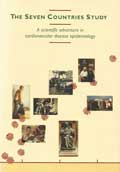

Publications
Publication of the aims, methods, findings, and interpretation of the Seven Countries Study include 10 books or monographs and some 500 peer-reviewed articles organized, as follows, into articles from the SCS as a whole, from the FINE and HALE studies, and from the individual countries.
Contents
- Books and monographs
- Ten most frequently cited peer-reviewed articles
- Joint peer-reviewed articles from the Seven Countries Study
- Joint peer-reviewed articles from the FINE and HALE Study
- Peer-reviewed articles from United States
- Peer-reviewed articles from Finland
- Peer-reviewed articles from Italy
- Peer-reviewed articles from The Netherlands
- Peer-reviewed articles from Greece
- Peer-reviewed articles from Croatia
- Peer-reviewed articles from Serbia
- Peer-reviewed articles from Japan
Kromhout D, Menotti A, Blackburn H (Eds). The Seven Countries Study: A scientific adventure in cardiovascular disease epidemiology. Brouwer Offset b.v., Utrecht, ISBN 90-6960-048-x, 1994. 219 pp.
Toshima H, Koga Y, Blackburn H, Keys A (Eds). Lessons for science from the Seven Countries Study. Springer Verlag, Berlin, Heidelberg, New York, Tokyo. ISBN 3-540-70140-0, 1994. 243 pp.
Keys A, Aravanis C, Blackburn H, Buzina R, Djordjević BS, Dontas AS, Fidanza F, Karvonen MJ, Kimura N, Menotti A, Mohacek I, Nedeljković S, Puddu V, Punsar S, Taylor HL, Van Buchem FSP. Seven Countries. A multivariate analysis of death and coronary heart disease. Cambridge, MA; Harvard University Press, ISBN: 0-674-80237-3, 1980. 381 pp.
Keys A (Ed). Coronary heart disease in seven countries. Circulation 1970;41(Suppl.1):211 pp.
Den Hartog C, Buzina R, Fidanza F, Keys A, Roine P. Dietary studies and epidemiology of heart diseases. Stichting tot wetenschappelijke Voorlichting op Voedingsgebied, The Hague, The Netherlands 1968. 157 pp.
Rose GA, Blackburn H. Cardiovascular Survey Methods. WHO Monograph Series No. 56, WHO Press, Geneva, 1968: 188 pp.
Keys A, Aravanis C, Blackburn H, Van Buchem FSP, Buzina R, Djordjević BS, Dontas AS, Fidanza F, Karvonen MJ, Kimura N, Lekos D, Monti M, Puddu V, Taylor HL. Epidemiological studies related to coronary heart disease. Characteristics of men aged 40‑59 in Seven Countries. Acta Med Scand 1966;180(S460):392 p.
Ancel and Margaret Keys. Eat well and stay well. Doubleday, 1959: 359 pp.
[colored_box bgcolor=”#dce9fa” textcolor=”#000″]
Ten most frequently cited peer-reviewed articles until March 2014
-
Hertog MGL, Feskens EJM, Hollman PCH, Katan MB, Kromhout D. Dietary antioxidant flavonoids and risk of coronary heart disease. The Zutphen Elderly Study. Lancet 1993;342:1007-1012. Impact factor = 39.1; Citations: 2579
-
Kromhout D, Bosschieter EB, De Lezenne Coulander C. The inverse relation between fish consumption and 20‑year mortality from coronary heart disease. N Engl J Med 1985;312:1205‑1209. Impact factor = 51.7; Citations: 1655
-
Hertog MGL, Kromhout D, Aravanis C, Blackburn H, Buzina R, Fidanza F, Giampaoli S, Jansen A, Menotti A, Nedeljkovic S, Pekkarinen M, Simic BS, Toshima H, Feskens EJM, Hollman PCH, Katan MB. Flavonoid intake and long-term risk of coronary heart disease and cancer in the Seven Countries Study. Arch Intern Med 1995;155:381-386. Impact factor = 11.5; Citations: 1149
-
Blackburn H, Keys A, Simonson E, Rautaharju P, Punsar S. The electrocardiogram in population studies – a classification system. Circulation 1960;21:1160-1175. Impact factor = 15.2; citations: 1097
-
Keys A, Karvonen MJ, Kimura N, Fidanza F, Taylor HL. Indexes of relative weight and obesity. J Chron Dis 1972;25:329-343. Impact Factor = 5.3; Citations: 1000
-
Keys A, Menotti A, Karvonen MJ, Aravanis C, Blackburn H, Buzina R, Djordjevic BS, Dontas AS, Fidanza F, Keys MH, Kromhout D, Nedeljkovic S, Punsar S, Seccareccia F, Toshima H. The diet and 15‑year death rate in the Seven Countries Study. Am J Epidemiol 1986;124:903‑915. Impact factor = 4.8; Citations: 765
-
Keli SO, Hertog GL, Feskens EJM, Kromhout D. Dietary flavonoids, antioxidant vitamins and incidence of stroke. The Zutphen Study. Arch Intern Med 1996;156:637-642. Impact factor = 11.5; Citations: 565
-
Knoops KTB, Groot LCPGM de, Kromhout D, Perrin AE, Moreiras-Varela O, Menotti A, Staveren WA van. Mediterranean diet, lifestyle factors and 10-year mortality in elderly European men and women. The HALE project. JAMA 2004;292:1433-1439. Impact factor = 30.0; Citations: 554
-
Verschuren WMM, Jacobs DR, Bloemberg BPM, Kromhout D, Menotti A, Aravanis C, Blackburn HW, Buzina R, Dontas AS, Fidanza F, Karvonen MJ, Nedeljkovic S, Nissinen A, Toshima H. Serum total cholesterol and long-term coronary heart disease mortality in different cultures. Twenty-five year follow-up of the Seven Countries Study. JAMA 1995;274:131-136. Impact factor = 30.0; Citations: 279
-
Hoogen PC van den, Feskens EJ, Nagelkerke NJ, Menotti A, Nissinen A, Kromhout D, for the Seven Countries Study Research Group. The relation between blood pressure and mortality due to coronary heart disease among men in different parts of the world. N Engl J Med; 2000; 342;1-8. Impact factor = 51.7; Citations: 260
List of joint peer-reviewed articles from The Seven Countries Study
[fancy_list style=”bullet_list”]
- BMI Mediated Effect Project of Chronic Diseases Collaboration. Multiple authors including for the Seven Countries Study Blackburn H, Jacobs D, Nissinen A, Tolonen H, Tuomilehto J, Feskens EJ, Geleijnse JM, Kromhout D, Waterham E, Lanti MP, Menotti A, Dontas C, Dontas I, Kafatos A, Moschandreas J, Milic N, Ostojic MC, Parapid B, Adachi H, Hirai Y. Metabolic mediators of the effects of body-mass index, overweight, and obesity on coronary heart disease and stroke: a pooled analysis of 97 prospective cohorts with 1.8 million participants. Lancet 2013;383:970-83.
- Menotti A, Puddu PE, Lanti M, Kromhout D, Tolonen H, Parapid B, Kircanski B, Kafatos A, Adachi H. Epidemiology of typical coronary heart disease versus heart disease of uncertain etiology (atypical) fatalities and their relationships with classic coronary risk factors. Int J Cardiol 2013;168:3963-3967.
- Menotti A, Puddu PE. Coronary heart disease differences across Europe: a contribution from the Seven Countries Study. J Cardiovasc Med 2013; 14:767-772.
- Rautaharju PM, Menotti A, Blackburn H, Parapid B, Kircanski B. Isolated negative T waves as independent predictors of short-term and long-term coronary heart disease mortality in men free of manifest heart disease in the Seven Countries Study. J Electrocardiol 2012;45:717-722.
- De Vos-Houben JMJ, Rius Ottenheim N, Kafatos A, Buijsse B, Hageman GJ, Kromhout D, Giltay EJ. Telomere length, oxidative stress, and antioxidant status in elderly men in Zutphen and Crete. Mechanisms Ageing Dev 2012;133:373-377.
- Rius-Ottenheim N, Houben JMJ, Kromhout D, Kafatos A, Mast RC van der, Zitman FG, Geleijnse JM, Hageman GJ, Giltay EJ. Telomere length and mental well-being in eldery men from the Netherlands and Greece. Behav Genet 2012;42:278-286.
- Kromhout D, Geleijnse JM, Menotti A, Jacobs Jr DR. The confusion about dietary fatty acids recommendations for CHD prevention. Brit J Nutr 2011;106:627-632.
- Puddu PE, Menotti A, Tolonen H, Nedeljkovic S, Kafatos AG. Determinants of 40-year all-cause mortality in the European cohorts of the Seven Countries Study. Eur J Epidemiol 2011;26:595-608.
- Giltay EJ, Nissinen A, Giampaoli S, Zitman FG, Kromhout D. Low respiratory function increases the risk of depressive symptoms in later life in men. Psychosomatic Med 2010;72;53-60.
- Giltay EJ, Zitman FG, Menotti A, Nissinen A, Jacobs Jr DR, Adachi H, Kafatos A, Kromhout D for the Seven Countries Study Group. Respiratory function and other biological risk factors for completed suicide: 40 years of follow-up of European cohorts of the Seven Countries Study. J Affect Disord 2010;120:249-253.
- Puddu PE, Menotti A. Artificial neural network versus multiple logistic function to predict 25-year coronary heart disease mortality in the Seven Countries Study. Eur J Cardiovasc Prev Rehabil 2009;16:583-591.
- Alonso A, Jacobs DR Jr, Menotti A, Nissinen A, Dontas A, Kafatos A, Kromhout D. Cardiovascular risk factors and dementia mortality: 40 years of follow-up in the Seven Countries Study. J Neurol Sci 2009;280:79-83.
- Menotti A, Lanti M, Kromhout D, Blackburn H, Jacobs D, Nissinen A, Dontas A, Kafatos A, Nedeljkovic S, Adachi H. Homogeneity in the relationship of serum cholesterol to coronary deaths across different cultures: 40-year follow-up. Eur J Cardiovasc Prev Rehabil 2008;15:719-725.
- Menotti A, Lanti M, Kromhout D, Blackburn H, Nissinen A, Dontas A, Kafatos A, Nedeljkovic S, Adachi H. Forty-year coronary mortality trends and changes in major risk factor in the first 10 years of follow-up in the Seven Countries Study. Eur J Epidemiol 2007;22:747-754.
- Buijsse B, Feskens EJ, Moschandreas J, Jansen EH, Jacobs DR Jr, Kafatos A, Kok FJ, Kromhout D. Oxidative stress, and iron and antioxidant status in elderly men: differences between the Mediterranean South (Crete) and Nothern Europe (Zutphen). Eur J Cardiovasc Prev Rehab 2007;14:495-500.
- Boshuizen HC, Lanti M, Menotti A, Moschandreas J, Tolonen H, Nissinen A, Nedeljkovic S, Kafatos A, Kromhout D. Effects of past and recent blood pressure and cholesterol level on coronary heart disease and stroke mortality, accounting for measurement error. Am J Epid 2007:165 (4);398-409.
- Fidanza F, Alberti A, Lanti M, Menotti A. Mediterranean Adequacy Index: correlation with 25-year mortallity from coronary heart disease in the Seven Countries Study. Nutr Metab Cardiovasc Dis 2004;14:254-258.
- Wong J, Wolf HK. Secular trends and senescence of blood pressure in a Japanese and Yugoslavian cohort of the Seven Countries Study. Blood Press 2003;12:32-39.
- Menotti A, Puddu PE, Lanti M, Kromhout D, Blackburn H, Nissinen A. Twenty-five-year coronary mortality trends in the Seven Countries Study using the accelerated failure time model. Eur J Epidemiol 2003;18:113-122.
- Prospective Studies Collaboration (multiple authors including the following for the Seven Countries Study: Aravanis C, Blackburn H, Buzina R, Dontas A, Fidanza F, Giampaoli S, Karvonen M, Keys A, Kromhout D, Lanti M, Menotti A, Mohacek I, Nedeljkovic S, Nissinen A, Punsar S, Seccareccia F, Toshima H). Age-specific relevance of usual blood pressure to vascular mortality: a meta-analysis of individual data for one million adults in 61 prospective studies. Lancet 2002;360:1903-1913.
- Walda IC, Tabak C, Smit HA, Rasanen L, Fidanza, Menotti A, Nissinen A, Feskens EJ, Kromhout D. Diet and 20-year chronic obstructive pulmonary disease mortality in middle-aged men from three European countries. Eur J Clin Nutr 2002;56:638-643.
- Menotti A, Blackburn H, Kromhout D, Nissinen A, Adachi H, Lanti M. Cardiovascular risk factors as determinants of 25-year all-cause mortality in the Seven Countries Study. Eur J Epidemiol 2001;17:337-346.
- Van den Hoogen P, Seidell J, Nagelkerke N, Menotti A, Kromhout D. Relation between blood pressure and mortality: is there a threshold? Eur Heart J 2001;22:2132-2133.
- Tabak C, Smit HA, Räsänen L, Fidanza F, Menotti A, Nissinen A, Feskens EJ, Heederik D, Kromhout D. Alcohol consumption in relation to 20-year COPD mortality and pulmonary function in middle-aged men from three European Countries. Epidemiol 2001;12:239-245.
- Jansen MC, Bueno de Mesquita HB, Räsänen L, Fidanza F, Nissinen AM, Menotti A, Kok FJ, Kromhout D. Cohort analysis of fruit and vegetable consumption and lung cancer mortality in European men. Int J Cancer 2001;92:913-918.
- Kromhout D, Bloemberg B, Seidell JC, Nissinen A, Menotti A. Physical activity and dietary fiber determine population body fat levels: the Seven Countries Study. Int J Obesity 2001;25:301-306.
- Feskens EJ, Oomen CM, Hogendoorn E, Menotti A, Kromhout D. Arginine intake and 25-year CHD mortality: the Seven Countries Study. Eur Heart J 2001;22:611-612.
- Virtanen SM, Feskens EJM, Räsänen L, Fidanza F, Tuomilehto J, Giampaoli S, Nissinen A, Kromhout D. Comparison of diets of diabetic and non-diabetic elderly men in Finland, The Netherlands and Italy. Eur J Clin Nutr 2000;54:181-6.
- Oomen CM, Feskens EJ, Räsänen L, Fidanza F, Nissinen AM, Menotti A, Kok FJ, Kromhout D. Fish consumption and coronary heart diease mortality in Finland, Italy and the Netherlands. Am J Epidemiol 2000;151:999-1006.
- Visscher TL, Seidell JC, Menotti A, Blackburn H, Nissinen A, Feskens EJ, Kromhout D. Underweight and overweight in relation to mortality among men aged 40-59 and 50-69 years: the Seven Countries Study. Am J Epidemiol 2000;151:660-666.
- Mulder I, Jansen MC, Smit HA, Jacobs DR Jr, Menotti A, Nissinen A, Fidanza F, Kromhout D. Role of smoking and diet in the cross-cultural variation in lung-cancer mortality: the Seven Countries Study. Seven Countries Study Research Group. Int J Cancer 2000 15;88:665-671.
- Van den Hoogen PC, Seidell JC, Menotti A, Kromhout D. Blood pressure and long-term coronary heart disease mortality in the Seven Countries study: implications for clinical practice and public health. Eur Heart J 2000;21:1639-1642.
- Menotti A, Lanti M, Puddu PE, Kromhout D. Coronary heart disease incidence in northern and southern European populations: a reanalysis of the Seven Countries Study for a European coronary risk chart. Heart 2000;84:238-244.
- Kromhout D, Bloemberg B, Feskens E, Menotti A, Nissinen A. Saturated fat, vitamin C and smoking predict long-term population all-cause mortality rates in the Seven Countries Study. Int J Epidemiol 2000;29:260-265.
- Van den Hoogen PC, Feskens EJ, Nagelkerke NJ, Menotti A, Nissinen A, Kromhout D. The relation between blood pressure and mortality due to coronary heart disease among men in different parts of the world. Seven Countries Study Research Group. N Engl J Med 2000;342:1-8.
- Tabak C, Smit HA, Räsänen I, Fidanza F, Menotti A, Nissinen A, Feskens EJM, Heederik D, Kromhout D. Dietary factors and pulmonary function: a cross-sectional study in middle aged men from three European countries. Thorax 1999;54:1021-1026.
- Menotti A, Kromhout D, Blackburn H, Fidanza F, Buzina R, Nissinen A. Food intake patterns and 25-year mortality from coronary heart disease: cultural correlations in the Seven Countries Study. The Seven Countries Research Group. Eur J Epidemiol 1999;15:507-15.
- Prospective Studies Collaboration (multiple authors including the following for the Seven Countries Study: Aravanis C, Blackburn H, Buzina R, Dontas A, Fidanza F, Giampaoli S, Karvonen M, Keys A, Kromhout D, Lanti M, Menotti A, Mohacek I, Nedeljkovic S, Nissinen A, Punsar S, Seccareccia F, Toshima H). Collaborative overview (metanalysis) of prospective observational studies of usual blood pressure and usual cholesterol levels with common causes of death: protocol of the second cycle of the Prospectuve Studies Collaboration. J Cardiovasc Risk 1999;6:315-329.
- Kromhout D. Serum cholesterol in cross-cultural perspective. The Seven Countries Study. Acta Cardiol 1999;54:155-158.
- Jansen MC, Bueno de Mesquita HB, Räsänen L, Fidanza F, Menotti A, Nissinen A, Feskens EJ, Kok FJ, Kromhout D. Consumption of plant foods and stomach cancer mortality in the Seven Coutries Study. Is grain consumption a risk factor? Seven Countries Study Research Group. Nutr Cancer 1999;34:49-55.
- Kromhout D. On the waves of the Seven Countries Study: a public health perspective on cholesterol. Eur Heart J 1999;20:796-802.
- Jacobs DR Jr, Adachi H, Mulder I, Kromhout D, Menotti A, Nissinen A, Blackburn H. Cigarette smoking and mortality risk: twenty-five-year follow-up of the Seven Countries Study. Arch Intern Med 1999;159:733-740.
- Jansen MC, Bueno de Mesquita HB, Buzina R, Fidanza F, Menotti A, Blackburn H, Nissinen AM, Kok FJ, Kromhout D. Dietary fiber and plant foods in relation to colorectal cancer mortality: the Seven Countries Study. Int J Cancer 1999;12(81):174-179.
- Tabak C, Feskens EJ, Heederik D, Kromhout D, Menotti A, Blackburn HW. Fruit and fish consumption: a possible explanation for population differences in COPD mortality (The Seven Countries Study). Eur J Clin Nutr. 1998;52:819-825
- Dontas AS, Menotti A, Aravanis C, Ioannidis P, Seccareccia F. Comparative total mortality in 25 years in Italian and Greek middle aged rural men. Epidemiol Comm Hlth 1998;52:638-644.
- Ocke MC, Bueno de Mesquita HB, Feskens EJ, Kromhout D, Menotti A, Blackburn H. Adherence to the European Code Against Cancer in relation to long-term cancer mortality: intercohort compariasons from the Seven Countries Study. Nutr Cancer. 1998;30:14-20
- Menotti A, Blackburn H, Seccareccia F, Kromhout D, Nissinen A, Karvonen M, Fidanza F, Giampaoli S, Buzina R, Mohacek I, Nedeljkovic S, Aravanis C, Dontas A. Relationship of some risk factors with typical an atypical manifestations of coronary heart disease. Cardiology 1998;89:59-67.
- Huijbregts P, Feskens E, Räsänen L, Fidanza F, Nissinen A, Menotti A, Kromhout D. Dietary pattern and 20 year mortality in elderly men in Finland, Italy and the Netherlands: a longitudinal cohort study. Brit Med J 1997;315:13-17.
- Menotti A, Blackburn H, Kromhout D, Nissinen A, Fidanza F, Giampaoli S, Buzina R, Mohacek I, Nedeljkovic S, Aravanis C, Toshima H. Changes in population cholesterol levels and coronary heart disease deaths in seven countries. Eur Heart J 1997;18:566-571.
- Menotti A, Blackburn H, Kromhout D, Nissinen A, Karvonen M, Aravanis C, Dontas A, Fidanza F, Giampaoli S. The inverse relation of average population blood pressure and stroke mortality rates in the Seven Countries Study: a paradox. Eur J Epidemiol 1997;13:379-386.
- Menotti A, Blackburn H, Seccareccia F, Kromhout D, Nissinen A, Aravanis C, Giampaoli S, Mohacek I, Nedeljkovic S, Toshima H. The relation of chronic diseases to all-cause mortality risk – the Seven Coutries Study. Ann Med 1997;29:134-141.
- Kromhout D, Bloemberg BPM, Feskens EJM, Hertog MGL, Menotti A, Blackburn H, for the Seven Countries Study Group. Alcohol, fish, fiber and antioxidant vitamins intake do not explain population differences in coronary heart disease mortality. Int J Epidemiol 1996;25:753-759.
- Menotti A, Keys A, Blackburn H, Kromhout D, Karvonen M, Nissinen A, Pekkanen J, Punsar S, Fidanza F, Giampaoli S, Seccareccia F, Buzina R, Mohacek I, Nedeljkovic S, Aravanis C, Dontas A, Toshima H, Lanti M. Comparison of multivariate predictive power of major risk factors for coronary heart disease in different countries. The experience in eight nations of the Seven Countries Study 25-year follow-up. J Cardiov Risk 1996;3:69-75.
- Menotti A, Jacobs DR Jr, Blackburn H, Kromhout D, Nissinen A, Nedeljkovic S, Buzina R, Mohacek I, Seccareccia F, Giampaoli S, Dontas A, Aravanis C, Toshima H. Twenty-five-year prediction of stroke deaths in the Seven Countries Study. The role of blood pressure and its changes. Stroke 1996;27:381-387.
- Prospective Studies Collaboration (multiple authors including the following for the Seven Countries Study: Aravanis C, Blackburn H, Buzina R, Dontas A, Fidanza F, Giampaoli S, Karvonen M, Keys A, Kromhout D, Lanti M, Menotti A, Mohacek I, Nedeljkovic S, Nissinen A, Punsar S, Seccareccia F, Toshima H). Cholesterol, diastolic blood pressure and stroke: 13,000 strokes in 450,000 people in 45 prospective cohorts. Lancet 1995;346:1647-1452.
- Menotti A, Seccareccia F, Blackburn H, Keys A. Coronary mortality and its prediction in samples of US and Italian railroad employees in 25 years within the Seven Countries Study of cardiovascular diseases. Int J Epidemiol 1995;24:515-522.
- Farchi G, Fidanza F, Grossi P, Lancia A, Mariotti S, Menotti A. Relationship between eating patterns meeting reccomendations and subsequent mortality in 20 years. Eur J Clin Nutr 1995;49:408-419.
- Huijbregts PPCW, Feskens EJM, Räsänen L, Fidanza-Alberti A, Mutanen M, Fidanza F, Kromhout D. Dietary intake in five aging cohorts in Finland, Italy and the Netherlands. Eur J Clin Nutr 1995;49:852-860.
- Peters EThJ, Seidell JC, Menotti A, Aravanis C, Dontas A, Fidanza F, Karvonen M, Nedeljkovic S, Nissinen A, Buzina R, Bloemberg B, Kromhout D. Changes in body weight in relation to mortality in 6,441 European middle-aged men: the Seven Countries Study. Int J Obesity 1995;19:862-868.
- Verschuren WMM, Jacobs DR, Bloemberg BPM, Kromhout D, Menotti A, Aravanis C, Blackburn HW, Buzina R, Dontas AS, Fidanza F, Karvonen MJ, Nedeljkovic S, Nissinen A, Toshima H. Serum total cholesterol and long-term coronary heart disease mortality in different cultures. Twenty-five year follow-up of the Seven Countries Study. JAMA 1995;274:131-136.
- Feskens EJM, Tuomilehto J, Stengård J, Pekkanen J, Nissinen A, Kromhout D. Hypertension and overweight associated with hyperinsulinaemia and glucose tolerance: a longitudinal study of the Finnish and Dutch cohorts of the Seven Countries Study. Diabetologia 1995;38:839-847.
- Feskens EJM, Virtanen SM, Räsänen L, Tuomilehto J, Stengård J, Pekkanen J, Nissinen A, Kromhout D. Dietary factors determining diabetes and impaired glucose tolerance: a 20-yr follow-up of the Finnish and Dutch cohorts of the Seven Countries Study. Diabetes Care 1995;18:1104-1112.
- Kromhout D, Menotti A, Bloemberg B, Aravanis C, Blackburn H, Buzina R, Dontas AS, Fidanza F, Giampaoli S, Jansen A, Karvonen M, Katan M, Nissinen A, Nedeljkovic S, Pekkanen J, Punsar S, Räsänen L, Simic B, Toshima H. Dietary saturated and trans fatty acids, cholesterol and 25-year mortality from coronary heart disease. The Seven Countries Study. Prev Med 1995;24:308-315.
- Ocké MC, Kromhout D, Menotti A, Aravanis C, Blackburn H, Buzina R, Fidanza F, Jansen A, Nedeljkovic S, Nissinen A, Pekkarinen M, Toshima H. Average intake of anti-oxidant (pro)vitamins and subsequent cancer mortality in the 16 cohorts of the Seven Countries study. Int J Cancer 1995;61:480-484.
- Hertog MGL, Kromhout D, Aravanis C, Blackburn HW, Buzina R, Fidanza F, Giampaoli S, Jansen A, Menotti A, Nedeljkovic S, Pekkarinen M, Simic BS, Toshima H, Feskens EJM, Hollman PCH, Katan MB. Flavonoid intake and long-term risk of coronary heart disease and cancer in the Seven Countries Study. Arch Intern Med 1995;155:381-6.
- Menotti A, Keys A, Kromhout D, Blackburn H, Aravanis C, Bloemberg B, Buzina R, Dontas A, Fidanza F, Giampaoli S, Karvonen MJ, Lanti M, Mohacek I, Nedeljkovic S, Nissinen A, Pekkanen J, Punsar S, Seccareccia F, Toshima H. Inter-cohort differences in coronary heart disease mortality in the 25-year follow-up of the Seven Countries Study. Eur J Epidemiol 1993;9:527-536.
- Kromhout D, Katan MB, Menotti A, Keys A, Bloemberg BPM. Serum cholesterol and long-term death rates from suicide, accidents of violence. Lancet 1992;340:317 (Letter to the editor).
- Menotti A, Keys A, Blackburn H, Karvonen M, Punsar S, Nissinen A, Pekkanen J, Kromhout D, Giampaoli S, Seccareccia F, Fidanza F, Nedeljkovic S, Aravanis C, Dontas AS, Toshima H. Blood pressure changes as predictors of future mortality in the Seven Countries Study. J Hum Hypertension 1991;5:137‑144.
- Menotti A, Keys A, Kromhout D, Nissinen A, Blackburn H, Fidanza F, Giampaoli S, Karvonen MJ, Pekkanen J, Punsar S, Seccareccia F. All cause mortality and its determinants in middle‑aged men in Finland, the Netherlands and Italy in a 25‑year follow‑up. J Epidemiol Comm Health 1991;45:125‑130.
- Kromhout D, Nissinen A, Menotti A, Bloemberg BPM, Pekkanen J, Giampaoli S. Total and HDL cholesterol and their correlates in elderly men in Finland, Italy and the Netherlands. Am J Epidemiol 1990;131:855‑863.
- Menotti A, Keys A, Kromhout D, Nissinen A, Blackburn H, Fidanza F, Giampaoli S, Karvonen MJ, Pekkanen J, Punsar S, Seccareccia F. Twenty‑five‑year mortality from coronary heart disease and its prediction in five cohorts of middle aged men in Finland, the Netherlands, and Italy. Prev Med 1990;19:270‑278.
- Menotti A, Keys A, Blackburn H, Aravanis C, Dontas AS, Fidanza F, Giampaoli S, Karvonen MJ, Kromhout D, Nedeljkovic S, Nissinen A, Pekkanen J, Punsar S, Seccareccia F, Toshima H. Twenty‑year stroke mortality and prediction in twelve cohorts of the Seven Countries Study. Int J Epidemiol 1990;19:309‑315.
- Menotti A, Keys A, Aravanis C, Blackburn H, Dontas AS, Fidanza F, Karvonen MJ, Kromhout D, Nedeljkovic S, Nissinen A, Pekkanen J, Punsar S, Seccareccia F, Toshima H. Seven Countries Study. First 20 year mortality data in 12 cohorts of the Seven Countries. Ann Med 1989;21:175‑179.
- Kromhout D, Keys A, Aravanis C, Buzina R, Fidanza F, Giampaoli S, Jansen A, Menotti A, Nedeljkovic S, Pekkarinen M, Simic BS, Toshima H. Food consumption patterns in the 1960s in Seven Countries. Am J Clin Nutr 1989;49:889‑894.
- Keys A, Karvonen MJ. The diet and 15-year death rate in the Seven Countries Study. Am J Epidemiol 1988;128(1):238-241.
- Mariotti S, Capocaccia R, Farchi G, Menotti A, Verdecchia A, Keys A. Age, period, cohort and geographical area effects on the relationship between risk factors and coronary heart disease mortality. 15-year follow‑up of the European cohorts of the Seven Countries Study. J Chron Dis 1986;39:229‑242.
- Keys A, Menotti A, Karvonen MJ, Aravanis C, Blackburn H, Buzina R, Djordjevic BS, Dontas AS, Fidanza F, Keys M, Kromhout D, Nedeljkovic S, Punsar S, Seccareccia F, Toshima H. The diet and 15‑year death rate in the Seven Countries Study. Am J Epidemiol 1986;124:903‑915.
- Keys A, Aravanis C, Blackburn H, Buzina R, Dontas AS, Fidanza F, Karvonen MJ, Menotti A, Nedeljkovic S, Punsar S, Toshima H. Serum cholesterol and cancer mortality in the Seven Countries Study. Am J Epidemiol 1985;121:870‑883.
- Keys A, Menotti A, Aravanis C, Blackburn H, Djordjevic BS, Buzina R, Dontas AS, Fidanza F, Karvonen MJ, Kimura N, Mohacek I, Nedeljkovic S, Puddu V, Punsar S, Taylor HL, Conti S, Kromhout D, Toshima H. The Seven Countries Study: 2,289 deaths in 15 years. Prev Med 1984;13:141‑154.
- Mariotti S, Capocaccia R, Farchi G, Menotti A, Verdecchia A, Keys A. Differences in the incidence rate of coronary heart disease between North and South European cohorts of the Seven Countries Study. Eur Heart J 1982;3:481‑487.
- Keys A, Aravanis C, Van Buchem F, Blackburn H, Buzina R, Djordjevic BS, Fidanza F, Karvonen MJ, Kimura N, Menotti A, Nedeljkovic S, Puddu V, Taylor HL. The diet and all causes death rate in the Seven Countries Study. Lancet 1981;2:58‑61.
- Farchi G, Capocaccia R, Verdecchia A, Menotti A, Keys A. Risk factors changes and coronary heart disease in an observational study. Int J Epidemiol 1981;10:31‑40.
- Menotti A, Capocaccia R, Conti S, Farchi G, Mariotti S, Verdecchia A, Keys A, Karvonen MJ, Punsar S. Identifying subsets of major risk factors in multivariate estimation of coronary risk. J Chron Dis 1977;30:557‑565.
- Rose GA, Blackburn H, Keys A, Taylor HL, Kannel WB, Paul O, Reid DD, Stamler J. Colon cancer and blood cholesterol. Lancet 1974;1:181-183.
- Rautaharju PM, Punsar S, Blackburn H, Warren J, Menotti A. Waveform patterns in Frank lead rest and exercise electrocardiogram of healthy elderly men. Circulation 1973;48:541‑548.
- Keys A, Fidanza F, Karvonen MJ, Kimura N, Taylor HL. Indices of relative weight and obesity. J Chron Dis 1972;25:329-343.
- Keys A, Aravanis C, Blackburn H, Djordjevic BS, Dontas AS, Fidanza F, Karvonen MJ, Menotti A, Taylor HL. Lung function as a risk factor for coronary heart disease. Am J Publ Health 1972;62:1506‑1511.
- Keys A, Aravanis C, Blackburn H, Van Buchem FSP, Buzina R, Djordjevic BS, Fidanza F, Karvonen M, Menotti A, Puddu V, Taylor HL. Probability of middle‑aged men developing coronary heart disease in five years. Circulation 1972;45:815‑828.
- Keys A, Aravanis C, Blackburn H, Van Buchem FSP, Buzina R, Djordjevic BS, Fidanza F, Karvonen MJ, Menotti A, Puddu V, Taylor HL. Coronary heart disease: overweight and obesity as risk factors. Ann Intern Med 1972;77:15‑27.
- Blackburn H, Keys A, Simonson E, Rautaharju P, Punsar S. The electrocardiogram in population studies. A classification system. Circulation 1960;21:1160-1175.
[icon style=”full_color” type=”edit” align=”left”]
Joint peer-reviewed articles on the elderly: The FINE and HALE Study
↑ Back to top
[fancy_list style=”bullet_list”]
- Giltay EJ, Nissinen A, Giampaoli S, Kromhout D. Apolipoprotein E genotype modifies the association between midlife lung function and cognitive function in old age. Dementia Geriat Cognitive Disord 2009;28:433-441
- Giltay EJ, Dortland AKBVR, Nissinen A, Giampaoli S, Veen T van, Zitman FG, Bots S, Kromhout D. Serum cholesterol, apolipoprotein E genotype and depressive symptoms in elderly European men: the FINE study. J Affect Disord 2009;115:471-477
- Kamphuis MH, Geerlings MI, Giampaoli S, Nissinen A, Grobbee DE, Kromhout D. The association of depression with cardiovascular mortality is partly explained by health status. The FINE study. J Affect Disord 2009;114:184-192
- Bots S, Tijhuis M, Giampaoli S, Kromhout D, Nissinen A. Lifestyle- and diet-related factors in late-life depression – a 5-year follow-up of elderly European men: the FINE study. Int J Geriat Psych 2008;23 (5):478-484
- Kamphuis MH, Geerlings MI, Dekker JM, Giampaoli S, Nissinen A, Grobbee DE, Kromhout D. Automatic dysfunction: a link between depression and cardiovascular mortality? The FINE study. Eur J Cardiovasc Prev Rehabil 2007:14;796-802
- Kamphuis MH, Geerlings MI, Tijhuis MAR, Giampaoli S, Nissinen A, Grobbee DE, Kromhout, D. Physical inactivity, depression, and risk of cardiovascular mortality. Med Sc Sports Exerc 2007;39(10):1693-1699
- Gelder BM van, Buijsse B, Tijhuis M, Kalmijn S, Giampaoli S, Nissinen A, Kromhout D. Coffee consumption is inversely associated with cognitive decline in elderly European men: the FINE Study. Eur J Clin Nutr 2007;61:226-232
- Gelder BM van, Tijhuis MAR, Kalmijn S, Giampaoli S, Kromhout D. Decline in cognitive functioning is associated with a higher mortality risk. Neuroepidemiology 2007;28:93-100
- Knoops KTB, Groot CPGM de, Fidanza F, Alberti-Fidanza A, Kromhout D, Staveren WA van. Comparison of three different dietary scores in relation to 10-year mortality in elderly in European subjects: the HALE project. Eur J Clin Nutr 2006;60(6):746-755
- Gelder BM van, Tijhuis MAR, Kalmijn S, Giampaoli S, Nissinen A, Kromhout D. Marital status and living situation during a 5-year period are associated with a subsequent 10-year cognitive decline in older men: The FINE study. J Geront Series B-Psychol Sc Soc Sc 2006;61(4):P213-P219
- Iestra J, Knoops K, Kromhout D, Groot L. de, Grobbee D, Staveren W van. Lifestyle, Mediterranean diet and survival in European post-mycocardial infarction patients. Eur J Cardiovasc Prev Rehabil 2006;13:894-900
- Brink CL van den, Bos GAM van den, Tijhuis M, Äijänseppä S, Nissinen A, Giampaoli S, Kromhout D. Hierarchy levels, sum score and worsening of disability are related to depressive symptoms in elderly men from three European countries. J Ageing Health 2006;18(1):125-141
- Kamphuis MH, Kalmijn S, Tijhuis MAR, Geerlings MI, Giampaoli S, Nissinen A, Grobbee DE, Kromhout D. Depressive symptoms as risk factor of cardiovascular mortality in older European men: the Finland, Italyand Netherlands Eldery (FINE) study. Eur J Cardiovasc Prev Rehabil 2006, 13:199-206.
- Brink CL van den, Tijhuis MAR, Bos GAM van den, Giampaoli S, Nissinen A, Kromhout D. The contribution of self-rated health and depressive symptoms to disability severity as predictor of 10-year mortality in European elderly men. Am J Publ Hlth 2005;95(11);2029-2034.
- Äijänseppä S, Notkola I-L, Tijhuis M, Staveren W van, Kromhout D, Nissinen A. Physical functioning in elderly Europeans: 10-year changes in the north and south: the HALE project. J Epidemiol Comm Health 2005;59:413-419.
- Brink CL van den, Picavet HSJ, Bos GAM van den, Giampaoli S, Nissinen A, Kromhout D. Duration and intensity of physical activity and disability among European elderly men. Disabil Rehabil 2005;27(6):341-347.
- Menotti A, Lanti M, Nedeljkovic S, Nissinen A, Kafatos A, Kromhout D. The relationship of age, blood pressure, serum cholesterol and smoking habits with the risk of typical and atypical coronary heart disease death in the European cohorts of the Seven Countries Study. Int J Cardiol 2005;106/2:157-163.
- Lanti M, Menotti A, Nedeljkovic S, Nissinen A, Kafatos A, Kromhout D. Long-term trends in major cardiovascular risk factors in cohorts of aging men in the European cohorts of the Seven Countries Study. Aging Clin Exp Res 2005;17:306-315.
- Menotti A, Lanti M, Kromhout D, Kafatos A, Nedeljkovic S, Nissinen A. Short and long-term association of a single serum cholesterol measurement in middle-aged men in prediction of fatal coronary and other cardiovascular events: a cross-cultural comparison through Europe. Eur J Epidemiol 2005;20:597-604.
- Brink CL van den, Tijhuis M, Bos GAM van den, Giampaoli S, Nissinen A, Kromhout D. Effect of widowhood on disability onset among elderly men from three European countries. J Am Geriatric Soc 2004;52:353-358.
- Knoops KTB, de Groot LCPGM, Kromhout D, Perrin AE, Moreiras-Varela O, Menotti A, van Staveren WA. Mediterranean diet, lifestyle factors, and 10-year mortality in elderly European men and women. JAMA 2004;292:1433-1439.
- Menotti A, Lanti M, Kafatos A, Nissinen A, Dontas A, Nedeljkovic S, Kromhout D. The role of a baseline casual blood pressure measurement and of blood pressure changes in middle age in prediction of cardiovascular and all-cause mortality occurring late in life : a cross-cultural comparison among the European cohorts of the Seven Countries Sudy. J Hypertension 2004;22:1683-1690.
- Gelder BM van, Tijhuis MAR, Kalmijn S, Giampaoli S, Nissinen A, Kromhout D. Physical activity in relation to cognitive decline in elderly men. The FINE Study. Neurology 2004;63:2316-2321.
- Brink CL van den, Tijhuis M, Kalmijn S, Klazinga NS, Nissinen A, Giampaoli S, Kivinen P, Kromhout D, van den Bos GA. Self-reported disability and its association with performance-based limitation in elderly men: a comparison of three European countries. J Am Geriatr Soc 2003;51(6):782-788.
- Houterman S, Boshuizen HC, Verschuren WMM, Giampaoli S, Nissinen A, Menotti A, Kromhout D. Predicting cardiovascular risk in the elderly in different European countries. Eur Heart J 2002;23:294-300.
- Menotti A, Mulder I, Nissinen A, Giampaoli S, Feskens EJ, Kromhout D. Prevalence of morbidity and multimorbidity in elderly male populations and their impact on 10-year all-cause mortality: The FINE study (Finland, Italy, Netherlands, Elderly). J Clin Epidemiol 2001;54:680-686
- Menotti A, Mulder I, Nissinen A, Feskens E, Giampaoli S, Tervahauta M, Kromhout D. Cardiovascular risk factors and 10-year all-cause mortality in elderly Euopean male populations. The FINE study. Eur Heart J 2001;22:573-9.
- Menotti A, Mulder I, Kromhout D, Nissinen A, Feskens EJ, Giampaoli S. The association of silent electrocardiographic findings with coronary deaths among elderly men in three European coutries. The FINE study. Acta Cardiol 2001;56:27-36.
- Houterman S, Verschuren WM, Giampaoli S, Nissinen A, Feskens E, Kromhout D. Total but not high-density lipoprotein cholesterol is consistently associated with coronary heart disease mortality in elderly men in Finland, Italy and the Netherlands. Epidemiol 2000;11:327-332.
- Huijbregts PPCW, Feskens EJM, Rasanen L, Fidanza F, Alberti-Fidanza A, Nissinen A, Giampaoli S, Kromhout D. Dietary patterns and cognitive function in elderly men in Finland, Italy and the Netherlands. Eur J Clin Nutr 1998;52:826-31.
- Ferrucci L, Cecchi F, Guralnik JM, Giampaoli S, Lo Noce C, Salani B, Bandinelli S, Baroni A. Does the Clock Drawing Test predict cognitive decline in older persons independent of the Mini-Mental State Examination? The FINE Study Group. Finland, Italy, The Netherlands Elderly. J Am Geriatr Soc. 1996;44:1326-1331.
- Bijnen FCH, Feskens EJM, Giampaoli S, Menotti A, Hornstra G, Caspersen CJ, Mosterd WL, Kromhout D. Haemostatic parameters and lifestyle factors in elderly men in Italy and the Netherlands. Thrombosis and Hemostasis 1996;16:411-416.
- Menotti A, Kromhout D, Nissinen A, Giampaoli S, Seccareccia F, Feskens E, Pekkanen J, Tervahauta M. Short-term all-cause mortality and its determinants in elderly male populations in Finland, the Netherlands, and Italy: The FINE Study. Prev Med 1996;25:319-326.
- Bijnen FCH, Feskens EJM, Caspersen CJ, Giampaoli S, Nissinen A, Menotti A, Mosterd WL, Kromhout D. Physical activity and cardiovascular risk factors in elderly men in Finland, Italy and the Netherlands. Am J Epidemiol 1996;143:553-561.
- Kromhout D, Nissinen A, Menotti A, Bloemberg B, Pekkanen J, Giampaoli S. Total and HDL cholesterol and their correlates in elderly men in Finland, Italy and the Netherlands. Am J Epidemiol 1990;131:855-863.
[icon style=”full_color” type=”edit” align=”left”]
Peer-reviewed articles from the United States
↑ Back to top
[fancy_list style=”bullet_list”]
- Menotti A, Kromhout D, Blackburn H, Jacobs D, Lanti M. Early and late coronary deaths in the US Railroad study predicted by major coronary risk factors. Eur J Cardiov Prev Rehabil 2004;11:382-388.
- Menotti A, Kromhout D, Blackburn H, Jacobs D, Lanti M. Forty-year mortality from cardiovascular diseases and all-causes of death in the US Railroad cohort of the Seven Countries Study. Eur J Epidemiol 2004;19:417-424.
- Yao CH, Slattery ML, Jacobs DR Jr, Folsom AR, Nelson ET. Anthropometric predictors of coronary heart disease and total mortality; findings from the US Railroad Study. Am J Epidemiol 1991;134:1278-1289.
- Jacobs DR Jr, Hahn LP, Folsom AR, Hannan PJ, Sprafka JM, Burke GL. Time trends in leisure-time physical activity in the upper midwest 1957-1987: University of Minnesota Studies. Epidemiol 1991;2:8-15.
- Slattery ML, Jacobs DR Jr, Nichaman MZ. Leisure time physical activity and coronary heart disease death. The U.S.Railroad Study. Circulation 1989;79:304-311.
- Slattery ML, Jacobs DR Jr. Physical fitness and cardiovascular disease mortality. The US Railroad Study. Am J Epidemiol 1988;127:571-580.
- Taylor HL. Physical activity: Is it still a risk factor? Prev Med 1983;12:20-24.
- Leon AS, Jacobs D, DeBacker G, Taylor HL. Relationship of physical characteristics and life habits to treadmill exercise capacity. Am J Epidemiol 1981;113:653-660.
- Remington RD, Taylor HL, Buskirk ER. A method for assessing volunteer bias and its application to cardiovascular disease prevention programme involving physical activity. J Epidemiol Comm Health 1978;32:250-255.
- Taylor HL, Jacobs D, Schucker B, Knudsen J, Leon AS, DeBacker G. A questionnaire for the assessment of leisure time physical activities. J Chronic Dis 1978;31:741-755.
- Keys A, Blackburn H, Taylor HL. Relationship of blood pressure, serum cholesterol, smoking habit, relative weight and ECG abnormalities to incidence of major coronary events: final report of the Pooling Project. J Chronic Dis 1978;31:201-306.
- Taylor HL. Occupational factors in the study of coronary heart disease and physical activity. Can Med Ass J 1967;96:825-31.
- Blackburn H, Taylor HL, Parlin RW, Kihlberg J, Keys A. Physical activity of occupation and cigarette smoking: Relationship to ventilatory function and respiratory symptoms. Arch Environ Hlth 1965;10:312-22.
- Blackburn H. The electrocardiogram in cardiovascular epidemiology. Problems in standardized application. Ann NY Acad Sci 1965;126:882-905.
- Taylor HL. Coronary heart disease in physically active and sedentary population. J Sports Med Physical Fitness 1962;2:73-82.
- Taylor HL, Klepetar E, Keys A, Parlin RW, Blackburn H, Puchner T. Death rates among physically active and sedentary employees of the railroad industry. Am J Publ Hlth 1962;52:1697-1707.
- Taylor HL. Diet, physical activity and the serum cholesterol concentration. Min Med 1958;41:149-153.
Peer-reviewed articles from Finland
- Reinikainen J, Laatikainen T, Karvanen J, Tolonen H. Lifetime cumulative risk factors predict cardiovascular disease mortality in a 50-year follow-up study in Finland. Int J Epidemiol 2015; 44:108-116
- Pelkonen M, Notkola IL, Lakka T, Tukianinen HO, Kivinen P, Nissinen A. Delaying decline in pulmonary function with physical activity. A 25-year follow-up. Am J Respir Crit Care Med 2003;168(4):494-499.
- Äijänseppä S, Kivinen P, Helkala E-L, Kivelä S-L, Tuomilehto J, Nissinen A. Serum cholesterol and depressive symptoms in elderly Finnish men. Int J Geriatr Psychiatry 2002;17:629-634.
- Qiao Q, Pyörälä K, Pyörälä M, Nissinen A, Lindström J, Tilvis R, Tuomilehto J. Two-hour glucose is a better risk predictor for incident coronary heart disease and cardiovascular mortality than fasting glucose. Eur J Heart 2002;23:1267-1275.
- Pelkonen M, Notkola IL, Tukiainen H, Tervahauta M, Tuomilehto J, Nissinen A. Smoking cessation, decline in pulmonary function and total mortality: a 30 year follow-up study among Finnish cohorts in the Seven Countries Study (Authors’ reply). Thorax 2002;57:374-376.
- Harrela M. Qiao Q, Koistinen R, Tuomilehto J, Nissinen A, Seppala M, Leinonen P. High serum insulin-like growth factor binding protein-1 is associated with increased cardiovascular mortality in elderly men. Horm Metab Res 2002;34(3):144-149.
- Pelkonen M, Notkola IL, Tulkiainen H, Tervahauta M, Tuomilehto J, Nissinen A. Smoking cessation, decline in pulmonary function and total mortality: a 30 year follow-up study among the Finnish cohorts of the Seven Countries Study. Thorax 2001;56(9):703-707.
- Qiao Q, Tervahauta M, Nissinen A, Tuomilehto J. Mortality from all causes and from coronary heart disease related to smoking and changes in smoking during a 35-year follow-up of midle-aged Finnish men. Eur Heart J 2000;21(19):1621-1626.
- Pelkonen M, Tukiainen H, Tervahauta M, Notkola I, Kivelä S, Salorinne Y, Nissinen A. Pulmonary function, smoking cessation and 30 year mortality in middle aged Finnish men. Thorax 2000;55(9):746-750.
- Forsen T, Eriksson J, Qiao Q, Tervahauta M, Nissinen A, Tuomilehto J. Short stature and coronary heart disease: a 35-year follow-up of the Finn cohorts of the Seven Countries Study. J Intern Med 2000;248:326-332.
- Stengård JH, Kardia SL, Tervahauta M, Ehnholm C, Nissinen A, Sing CF. Utility of the predictors of coronary heart disease mortality in a longitudinal study of elderly Finnish men aged 65 to 84 years is dependent on context defined by Apo E genotype and area of residence. Clin Genet 1999;56:367-377.
- Qiao Q, Valle T, Nissinen A, Tuomilehto J: Smoking and the risk of diabetes in elderly Finnish men. Retrospective analysis of data from a 30-year follow-up study. Diabetes Care 1999;22:1821-1826.
- Ylihärsilä H, Tuomilehto J, Mackay IR, Zimmet P, Tuomilehto-Wolf E, Rowley MJ, Nissinen A. GAD antibodies in elderly men in different categories of glucose tolerance. Diabetes Care 1999;22:996-997.
- Tuomilehto J, Qiao Q, Salonen R, Nissinen A, Salonen JT. Ultrasonographic manifestations of carotid atherosclerosis and glucose intolerance in elderly Eastern Finnish men. Diabetes Care 1998 21:1349-1352.
- Notkola I-L, Sulkava R, Pekkanen J, Erkinjuntti T, Ehnholm C, Kivinen P, Tuomilehto J, Nissinen A. Serum total cholesterol, apolipoprotein E e4 allele, and Notkola Alzheimer’s disease. Neuroepidemiology 1998;17:14-20.
- Kivinen P, Sulkava R, Halonen P, Nissinen A. Self-reported and performance-based functional status and associated factors among elderly men: the Finnish cohorts of the Seven Countries Study. J Clin Epidemiol 1998;51:1243-1252.
- Kivinen P, Halonen P, Eronen M, Nissinen A. Self-rated health, physician-rated health and associated factors among elderly men: the Finnish cohorts of the Seven Countries Study. Age Ageing 1998;27:41-47.
- Tervahauta M, Pekkanen J, Punsar S, Nissinen A. Resting electrocardiographic abnormalities as predictors of coronary events and total mortality among elderly men. Am J Med 1996;100:641-645.
- Viitasalo V, Nissinen A, Kivinen P, Takala J. The last year of life: mortality, cause of death and need for help among old men. Scan J Soc Med 1996;24(2):132-139.
- Stengård JH, Pekkanen J, Enhholm C, Nissinen A, Sing CF. Genotypes with the apolipoprotein e4 allele are predictors of coronary heart disease mortality in a longitudinal study of elderly Finnish men. Hum Genet 1996;97:677-684.
- Martikainen J, Enlund H, Tuovinen K, Nissinen A. Changes in drug use among elderly men over a five-year period. J Appl Therapeutics 1996;1:171-177.
- Stengård JH, Pekkanen J, Sulkava R, Ehnholm C, Erkinjuntti T, Nissinen A. Apolipoprotein E polymorphism, Alzheimer disease and vascular dementia among elderly Finnish men. Acta Neurol Scand 1995;92:297-298.
- Tervahauta M, Pekkanen J, Nissinen A. Risk factors of coronary heart disease and total mortality among elderly men with and without preexisting coronary heart disease. Finnish cohorts of the Seven Countries Study. J Am Coll Cardiol 1995;26:1623-1629.
- Stengård JH, Zerba KE, Pekkanen J, Ehnholm C, Nissinen A, Sing CF. Apolipoprotein E polymorphism predicts death from coronary heart disease in a longitudinal study of elderly Finnish men. Circulation 1995;91:265-269.
- Pekkanen J, Räsänen L, Mutanen M, Rauramaa R, Nissinen A. Association of factor VII activity with dietary fat and blood lipids among elderly men. The Finnish cohorts of the Seven Countries Study. Nutr Metab Cardiovasc Dis 1995;5:149-154.
- Pekkanen J, Nissinen A, Vartiainen E, Punsar S, Karvonen MJ. Changes in serum cholesterol level and mortality: A 30-year follow-up of the Finnish cohorts of the Seven Countries Study. Am J Epidemiol 1994;139:155-165.
- Tervahauta M, Pekkanen J, Enlund H, Nissinen A. Change in blood pressure and 5-year risk of coronary heart disease among elderly men: the Finnish cohorts of the Seven Countries Study. J Hypertension 1994;12:1183-1189.
- Tuomilehto-Wolf E, Tuomilehto J, Hitman CA, Nissinen A, Stengård J, Pekkanen J, Kivinen P, Kaarsalo E, Karvonen MJ. Genetic susceptibility to non-insulin dependent diabetes mellitus and glucose intolerance are located in HLA region. Br Med J 1993;307:155-159.
- Tervahauta MP, Pekkanen J, Kivinen P, Stengård J, Jauhiainen M, Ehnholm C, Nissinen A. Prevalence of coronary heart disease and associated risk factors among elderly Finnish men. Atherosclerosis 1993;104:47-59.
- Stengård JH, Pekkanen J, Tuomilehto J, Kivinen P, Kaarsalo E, Tamminen M, Nissinen A, Karvonen MJ. Changes in glucose tolerance among elderly Finnish men during a five-year follow-up: The Finnish cohorts of the Seven Countries Study. Diabetes Metab 1993;19:121-129.
- Pekkanen J, Tervahauta M, Nissinen A, Karvonen MJ. Does the predictive value of baseline coronary risk factors change over a 30-year follow-up? The Finnish cohorts of the Seven Countries Study. Cardiology 1993;82:181-190.
- Nissinen A, Pekkanen J, Kivinen P, Tervahauta M, Stengård J, Kaarsalo E, Kivelä S-L, Väisänen S, Salonen JT, Tuomilehto J. Prevalence and change of cardiovascular risk factors among men born 1900-1919. The Finnish cohorts of the Seven Countries Study. Age Aging 1993;22:365-376.
- Stengård JH, Tuomilehto J, Pekkanen J, Kivinen P, Kaarsalo E, Nissinen A, Karvonen MJ. Diabetes mellitus, impaired glucose tolerance and mortality among elderly men: The Finnish cohorts of the Seven Countries Study. Diabetologia 1992;35:760-765.
- Räsänen L, Mutanen M, Pekkanen J, Laitinen S, Koski K, Halonen S, Kivinen P, Stengård J, Nissinen A. Dietary intake of 70- to 89-year-old men in eastern and western Finland. J Intern Med 1992;232:305-312.
- Pekkanen J, Manton KG, Stallard E, Nissinen A, Karvonen MJ. Risk factor dynamics, mortality, and life expectancy differences between eastern and western Finland: The Finnish cohorts of the Seven Countries Study. Int J Epidemiol 1992;21(2):406-419.
- Pekkanen J, Nissinen A, Punsar S, Karvonen MJ. Short and long-term association of serum cholesterol with mortality. The 25-year follow-up of the Finnish cohorts of the Seven Countries Study. Am J Epidemiol 1992;135(11):1251-1258.
- Molgaard CA, Poikolainen K, Elder JP, Nissinen A, Pekkanen J, Golbeck AL, Moor C de, Lahtela K, Puska P. Depression late after combat: A follow-up of Finnish World War Two veterans from the Seven Countries Study east-west cohorts. Military Med 1991;156(5):219-222.
- Lammi U-K, Kivelä S-L, Nissinen A, Laippala P, Punsar S, Puska P, Karvonen MJ. Predictors of high functional capacity and mortality in elderly Finnish men. Aging 1990;2(1):65-77.
- Enlund H, Martikainen J, Turakka H, Nissinen A. The use of prescription drugs among elderly Finnish men. J Clin Pharm Therapeutics 1990;15:115-122.
- Enlund H, Martikainen J, Turakka H, Kivelä S-L, Nissinen A. Problems with drug use among elderly men. J Geriatr Drug Therapy 1990;4(4):81-94.
- Pekkanen J, Nissinen A, Puska P, Punsar S, Karvonen MJ. Risk factors and 25-year risk of coronary heart disease in a male population with a high incidence of the disease: the Finnish cohorts of the Seven Countries Study. Br Med J 1989;299:81-85.
- Pekkanen J, Nissinen A, Punsar S, Karvonen MJ. Serum cholesterol and risk of accidental or violent death in a 25-year follow-up. The Finnish cohorts of the Seven Countries Study. Arch Intern Med 1989;149:1589-1591.
- Nissinen A, Pekkanen J, Porath A, Punsar S, Karvonen MJ. Risk factors for cardiovascular disease among 55 to 74 years-old Finnish men: A 10-year follow-up. Brief report. Ann Med 1989;21:239-240.
- Mäenpää P-H, Pirhonen A, Pirskanen A, Pekkanen J, Alftan G, Kivelä S-L, Nissinen A. Biochemical indicators related to antioxidant status and bone metabolic activity in Finnish elderly men. Int J Vit Nutr Res 1989;59:14-19.
- Marti B, Pekkanen J, Nissinen A, Ketola A, Kivelä S-L, Punsar S, Karvonen MJ. Association of physical activity with coronary risk factors and physical ability: 20-year follow-up of a cohort of Finnish men. Age Ageing 1989;18:103-109.
- Lammi U-K, Kivelä S-L, Nissinen A, Punsar S, Puska P, Karvonen MJ. Predictors of disability in elderly Finnish men – a longitudinal study. J Clin Epidemiol 1989;42(12):1215-1225.
- Lammi U-K, Kivelä S-L, Nissinen A, Punsar S, Puska P, Karvonen MJ. Mental disability among elderly men in Finland: prevalence, predictors and correlates. Acta Psychatr Scand 1989;80:459-468.
- Lammi U-K, Kivelä S-L, Nissinen A, Pekkanen J, Punsar S. Functional capacity and associated factors in elderly Finnish men. Scand J Soc 1989;17:67-75.
- Kivelä S-L, Nissinen A, Ketola A, Punsar S, Puska P, Karvonen MJ. Alcohol consumption and mortality in aging or aged Finnish men. J Clin Epidemiol 1989;42(1):61-68.
- Kivelä S-L, Mäenpää P, Nissinen A, Alftan G, Punsar S, Enlund H, Puska P. Vitamin A, vitamin E and selenium status in an aged Finnish male population. Int J Vit Nutr Res 1989;59:373-380.
- Aho K, Pekkarinen M. Diet and physical activity of men in East and West Finland in 1969. Ann Med 1989;21:241-243.
- Nissinen A, Pekkanen J, Porath A, Punsar S, Karvonen MJ. Risk factors for cardiovascular disease among 55 to 74 year-old Finnish men: A 10-year follow-up. Ann Med 1988;21:239-240.
- Kivelä S-L, Nissinen A, Punsar S, Puska P, Karvonen MJ. Determinants and predictors of heavy alcohol consumption among ageing Finnish men. Compr Gerontol B 1988;2:103-109.
- Kivelä A-L, Nissinen A, Ketola A, Punsar S, Puska P, Karvonen MJ. Changes in alcohol consumption during a ten-year follow-up among Finnish men aged 55-74 years. Functional Neurology 1988;3(2):167-178.
- Virtamo J, Valkeila E, Alftan G, Punsar S, Huttunen JK, Karvonen MJ. Serum selenium and risk of cancer. A prospective follow-up of nine years. Cancer 1987;60:145-148.
- Pekkanen J, Marti B, Nissinen A, Tuomilehto J, Punsar S, Karvonen MJ. Reduction of premature mortality by high physical activity: a 20-year follow-up of middle-aged Finnish men. Lancet 1987;1473-1477.
- Nissinen A, Piha T, Tuomilehto J, Romo M, Puska P. Comparison of the levels of cardiovascular risk factors between Eastern and South-western Finland in 1982. Acta Med Scand 1987;222:389-400.
- Kivelä S-L, Nissinen A, Punsar S, Puska P. Age and regional differences in reliability and factor structure of the Zung self-rating scale in elderly Finnish men. J Clin Psychology 1987;43(3):318-327.
- Kivelä S-L, Nissinen A. Nutrition education and changes in nutrition behavior among 65-74 year-old population of eastern Finland. J Nutr Educ 1987;19(2):77-82.
- Tuomilehto J, Nissinen A, Kivelä S-L, Pekkanen J, Kaarsalo W, Wolf E, Aro A, Punsar S, Karvonen MJ. Prevalence of diabetes mellitus in elderly men aged 65 to 84 years in eastern and western Finland. Diabetologia 1986;29:611-615.
- Nissinen A, Kivelä S-L, Tuimilehto J, Pekkanen J, Kostianen E, Piippo H, Lammi U-K, Punsar S, Puska O. Levels of some biological risk indicators among elderly men in Finland. Age Ageing 1986;15:203-211.
- Nissinen A, Kivelä S-L, Pekkanen J, Pitkänen L, Punsar S, Kaarsalo E, Puska P. Thyroid function tests in the elderly Finnish men. Acta Med Scand 1986;220:63-69.
- Kivelä S-L, Nissinen A, Tuomilehto J, Pekkanen J, Punsar S, Lammi U-K, Puska P. Prevalence of depressive and other symptoms in elderly Finnish men. Acta Psychiatr Scand 1986;73:93-100.
- Virtamo J, Valkeila E, Alfthan G, Punsar S, Huttunen JK, Karvonen MJ. Serum selenium and the risk of coronary heart disease and stroke. Am J Epidemiol 1985;122:276-282.
- Tuomilehto J, Nissinen A, Kivelä S-L, Wolf E, Kaarsalo E, Aro A, Pekkanen J, Punsar S. High prevalence of diabetes mellitus in elderly men in Finland. Diabetes Res Clin Pract 1985;(Suppl 1):570.
- Notkola V, Punsar S, Karvonen MJ, Haapakoski J. Socio-economic conditions in childhood and mortality and morbidity caused by coronary heart disease in adulthood in rural Finland. J Soc Science Med 1985;21:517-523.
- Nissinen A, Kivelä S-L, Pekkanen J, Tuomilehto J, Kostiainen E, Piippo H, Lammi UK, Kaarsalo E, Romo M, Punsar S. Levels of some biological risk indicators among elderly men in Finland. Age and Ageing 1985;15:203-211.
- Keys A, Karvonen MJ, Punsar S, Menotti A, Fidanza F, Farchi G. HDL serum cholesterol and 24-year mortality of men in Finland. Int J Epidemiol 1984;13(4):427-435.
- Aho K, Gordin A, Palosuo T, Punsar S, Valkeila E, Karvonen MJ, Inkovaara J, Pasternack A. Thyroid autoimmunity and cardiovascular diseases. Eur Heart J 1984;5:43-46.
- Palosuo T, Aho K, Punsar S. IgG-rheumatoid factor in a population of elderly males: relationship to IgM-rheumatoid factor and rheumatoid arthritis. Clin Exp Rheumatol 1983;1:311-315.
- Rautaharju PM, Antila K, Boeing J, Pyörälä K, Punsar S, Siltanen P, Karvonen MJ. Ischemic ST and R amplitude response to exercise; negative association with cigarette smoking. Jap Heart J 1982;23(Suppl 1):600-604.
- Karvonen MJ. Physical activity in work and leisure time in relation to cardiovascular diseases. Ann Clin Res 1982;14(Suppl 34)118-123.
- Heliövaara M, Karvonen MJ, Punsar S, Haapakoski J. Importance of coronary risk factors in presence and absence of myocardial ischaemia. Am J Cardiol 1982;50:1248.
- Heliövaara M, Karvonen MJ, Punsar S, Rautanen Y, Haapakoski J. Serum thiocynate concentration and cigarette smoking in relation to overall mortality and to deaths from coronary heart disease and lung cancer. J Chron Dis 1981;34:305-311.
- Punsar S, Karvonen MJ. Drinking water quality and sudden death: observations form west and east Finland. Cardiology 1979;64:35-34.
- Rahe RH, Hervig L, Romo M, Siltanen P, Punsar S, Karvonen MJ, Rissanen V. Coronary behaviour in three regions of Finland. J Psychosom Res 1978;22:455.
- Punsar S, Karvonen MJ. Quality of drinking water and sudden death. Observations from west and east Finland. Adv Cardiol 1978;25:25-26.
- Heliövaara M, Karvonen MJ, Vilhunen R, Punsar S. Smoking, carbon monoxide and atherosclerotic diseases. Br Med J 1978;1:268-270.
- Schwartz K, Ricci BA, Punsar S, Karvonen MJ. Inverse relation of silicon in drinking water and atherosclerosis in Finland. Lancet 1977;1:538-539.
- Punsar S, Wolf W, Mertz W, Karvonen MJ. Urinary chromium excretion and atherosclerotic manifestations in two Finnish male populations. Ann Clin Res 1977;9:79-83.
- Karvonen MJ, Punsar S. Sodium excretion and blood pressure of West and East Finns. Acta Med Scand 1977;202:501-517.
- Gaussett Ph, Delespesse G, Bastenie PA, Punsar S, Karvonen MJ. Milk antibodies and coronary heart disease. Lancet 1977;1:1006. (Letter to the editor).
- Bastenie PA, Vanhaelst L, Golstein J, Smets Ph, Keys A, Karvonen MJ, Punsar S. Asymptomatic autoimmune thyroiditis and coronary heart disease. Cross-sectional and prospective studies. Lancet 1977;12:155.
- Rahe RH, Arajärvi H, Arajärvi S, Punsar S, Karvonen MJ. Recent life changes and coronary heart disease in East versus West Finland. J Psychosom Res 1976;20:431-437.
- Punsar S, Karvonen MJ. Physical activity and coronary heart disease in populations from East and West Finland. Adv Cardiol 1976;18:196-207. (Letter to the editor)
- Punsar S, Karvonen MJ. Prevention of coronary heart disease. Lancet 1976;2:808.
- Punsar S, Erämetsä O, Karvonen MJ, Ryhänen A, Hilska P, Vornamo H. Coronary heart disease and drinking water. A search in two Finnish male cohorts for epidemiologic evidence of a water factor. J Chron Dis 1975;28:259-287.
- Karvonen MJ. Diet and cardiovascular disease. Practitioner 1974;212(2170):618-624.
- Rautaharju PM, Punsar S, Blackburn H, Warren J, Menotti A. Waveform patterns in Frank-lead rest and exercise electrocardiograms of healthy elderly men. Circulation 1973;48:541-548.
- Punsar S, Karvonen MJ. Angina pectoris and ECG abnormalities in relation to prognosis of coronary heart disease in population studies in Finland. Adv Cardiol 1973;8:148-161.
- Punsar S. Cardiovascular mortality and quality of drinking water. An evaluation of the literature from an epidemiological point of view. Work Environment Health 1973;10:107-125.
- Barry AJ, Karvonen MJ. Heart disease and perceived exertion. Work Environment Health 1971;8(2):52-58.
- Pekkarinen M. Methodology in the collection of food consumption data. Wrld Rev Nutr Diet 1970;12:145-171.
- Koivistoinen P, Ahlström A, Nissinen H, Pekkarinen M, Roine P. Mineral element compositions of Finnish diets. Part I: Fe, Cu, Mn, Zn, Mg, Na, K, Ca and P. Suomen Kemistilehti 1970;B43;426-430.
- Luomanmäki K, Heikkilä J. Duration of the phases of left ventricular mechanical systole in healthy men aged 45 to 64 years. Ann Clin Res 1969;1:156-164.
- Punsar S, Pyörälä K, Siltanen P. Classification of electrocardiographic S-T segment changes in epidemiological studies of coronary heart disease. Ann Med Int Fenn 1968;57:53-63.
- Herron RE, Dontas AS. Karvonen MJ, Keys A. Effects of aging on the carotid pulse in two Finnish populations. Acta Med Scand 1967;Suppl 472:125-135.
- Karvonen MJ. Epidemiology of heart disease in Finland. Work Environment Health 1966;2:21-25.
- Roine P, Pekkarinen M, Karvonen MJ. Dietary studies in connection with epidemiology of heart disease: Results in Finland. Voeding 1964;25:383-393.
- Roine P. Nutrition and heart disease: Studies in Finland. Biblioteca “Nutritio et Dieta” 1964;6:63-81.
- Pekkarinen M. Roine P. Studies on the food consumption of the rural populations in East and West Finland. Ann Med Exp Biol Fenn 1964;42:93-101.
- Karvonen MJ, Telivuo LJ, Järvinen EJK. Spygmomanometer cuff size and the accuracy of indirect measurement of blood pressure. Am J Cardiol 1964;13:688-693.
- Karvonen MJ. Effect of spygmomanometer cuff size blood pressure measurement. Bull WHO 1962;27:805-808.
- Karvonen MJ. Arteriosclerosis: Clinical surveys in Finland. Proc Roy Med 1962;55:271-274.
- Rautaharju PM, Karvonen MJ, Leuthold E. Sex differnces in the orientation and magnitude of the mean spatial QRS and T vectors. Acta Med Scand 1961;169:405-410.
- Rautaharju PM, Karvonen MJ, Keys A. The frequency of arteriosclerotic and hypertensive heart disease among ostensibly healthy working populations in Finland. An electrocariographic and clinical study. J Chron Dis 1961;13(5):426-438.
- Karvonen MJ, Rautaharju PM, Orma E, Punsar S, Takkunen J. Cardiovascular studies on lumberjacks. J Occup Med 1961;3:49-53.
- Karvonen MJ, Pekkarinen M, Metsälä P, Rautanen Y. Diet and serum cholesterol of lumberjacks. Brit J Nutr 1961;15:157-163.
- Rautaharju PM, Karvonen MJ, Keys A. The mean spatial QRS and T vectors in 468 healthy Finnish men, aged 20 to 59 years. Normal standards. The effect of age. Acta Med Scand 1960;167:153-157.
- Orma E, Karvonen MJ, Keys A. “Cuff” hypertension. Lancet 1960;2:51.
- Karvonen MJ, Orma E, Keys A, Fidanza F, Brozek J. Cigarette smoking, serum cholesterol, blood pressure. Observations in Finland. Lancet 1959;1:492-494.
- Roine P, Pekkarinen M, Karvonen MJ, Kihlberg J. Diet and cardiovascular disease in Finland. Lancet 1958;2:173-175.
- Keys A, Karvonen MJ, Fidanza F. Serum cholesterol studies in Finland. Lancet 1958;2:175-178.
Peer-reviewed articles from Italy
- Menotti A, Puddi PE, Lanti M, Maiani G, Fidanza F. Cardiovascular risk factors predict survival in middle-aged men during 50 years. Eur J Intern Med 2013;24:67-74
- Puddu PE, Menotti A. Artificial neural networks versus proportional hazards Cox models to predict 45-year all-cause mortality in the Italian Rural Areas of the Seven Countries Study. BMC Med Res Methodol. 2012;12:100
- Menotti A, Alberti-Fidanza A, Fidanza F. The association of the Mediterranean Adequacy Index with fatal coronary events in an Italian middle-aged male population followed for 40 years. Nutr Metab Cardiovasc Dis 2012;22:369-375
- Menotti A, Alberti-Fidanza A, Fidanza F, Lanti M, Fruttini D. Factor analysis in the identification of dietary patterns and their predictive role in morbid and fatal events. Publ Hlth Nutr 2012;15:1232-1239
- Menotti A, Lanti M, Maiani G, Kromhout D. Determinants of longevity and all-cause mortality among middle-aged men. Role of 48 personal characteristics in 40-year follow-up of Italian Rural Areas in the Seven Countries Study. Aging Clin Exp Res 2006;18;394-406
- Menotti A, Lanti M, Maiani G, Kromhout D. Forty-year mortality from cardiovascular diseases and their risk factors in men of the Italian rural areas of the Seven Countries Study. Acta Cardiol 2005;60:521-531.
- Fidanza F, Alberti A, Lanti M, Menotti A. Mediterranean adequacy index: correlation with 25-year mortality from coronary heart disease in the Seven Countries Study. Nutr Metab Cardiovasc Dis 2004;14:254-258
- Massari M, Freeman KM, Seccareccia F, Menotti A, Farchi G; Research Group of the RIFLE Project. An index to measure the association between dietary patterns and coronary heart disease risk factors: findings from two Italian studies. Prev Med. 2004;39:841-847.
- Seccareccia F, Alberti-Fidanza A, Fidanza F, Farchi G, Freeman K, Mariotti S, Menotti A. Vegetable intake and long-term survival among middle-aged men in Italy. Ann Epidemiol 2003;13:424-430.
- Menotti A, Lanti M. Coronary risk factors predicting early and late coronary deaths. Heart 2003;89:19-24.
- Menotti A, Lanti M. The duration of the association between serum cholesterol and coronary mortality: a 35-year experience. J Cardiov Risk 2001;8:109-117.
- Menotti A, Lanti M, Puddu PE. Twenty-five-year cardiovascular disease incidence among middle-aged men. Disease burden, time shape, predictors, risk probalilities. Ital Heart J 2000;1:749-757.
- Menotti A, Lanti M, Puddu PE. Long term time-related predictivity of coronary events as a function of a single measurement of serum cholesterol and systolic blood pressure. Acta Cardiol 2000;55:87-94.
- Menotti A, Lanti M, Puddu PE. Comparison of the Framingham risk function-based coronary chart with risk function from an Italian population study. Eur Heart J 2000;21:365-370.
- Farchi G, Fidanza F, Giampaoli S, Mariotti S, Menotti A. Alcohol and survival in the Italian rural cohorts of the Seven Countries Study. Int J Epidemiol 2000;29:667-671.
- Alberti-Fidanza A, Fidanza F, Chiuchiu MP, Verducci G, Fruttini D. Dietary studies on two rural Italian population groups of the Seven Countries Study. 3. Trend of food and nutrient intake from 1960 to 1991. Eur J Clin Nutr 1999;53:854-860.
- Giampaoli S, Ferruci L, Cecchi F, Lo Noce C, Poce A, Dima F, Santaquilani A, Vescio MF, Menotti A. Hand-grip strength predicts incident disability in non disabled older men. Age Ageing 1999;28:283-288.
- Menotti A, Giampaoli S. A single risk factor measurement predicts 35-year mortality from cardiovascular disease. G Ital Cardiol 1998;28:1354-1362.
- Menotti A, Giampaoli S, Seccareccia F. The relationship of cardiovascular risk factors measured at different ages to prediction of all-cause mortality and longevity. Arch Geront Geriat 1998;26:99-112.
- Alberti-Fidanza A, Coli R, Genipi L, Howard AN, Maurizi-Coli A, Mielcarz G, Rajput-Willems J, Thurnham D, Williams NR, Fidanza F. Vitamin and mineral nutritional status and other biochemical data assessed in groups of men from Crevalcore and Montegiorgio (Italy). Int J Vitamin Nutr Res 1995;65:193-198.
- Farchi G, Fidanza F, Grossi P, Lancia A, Mariotti S, Menotti A. Relationship between eating patterns meeting recommendations and subsequent mortality in 20 years. Eur J Clin Nutr 1995;49:408-419.
- Alberti-Fidanza A, Alunni Paolacci C, Chiuchiù MP, Coli R, Parretta MG, Verducci G, Fidanza F. Dietary studies on two rural Italian population groups of the Seven Countries Study. 2. Concurrent validation of protein, fat and corbohydrates intake. Eur J Clin Nutr 1994;48:92-96.
- Alberti-Fidanza A, Alunni Paolacci C, Chiuchiù MP, Coli R, Fruttini D, Verducci G, Fidanza F. Dietary studies on two rural Italian population groups of the Seven Countries Study. 1. Food and nutrient intake at the thirty-first year follow-up in 1991. Eur J Clin Nutr 1994;48:85-91.
- Farchi G, Fidanza F, Mariotti S, Menotti A. Is diet an independent risk factor for mortality? 20 year mortality in the Italian rural cohorts of the Seven Countries Study. Eur J Clin Nutr 1994;48:19-29.
- Menotti A. Epidemiology of cardiovascular diseases in elderly men and women in Italy. Am J Geriat Cardiol 1993;2:9-12.
- Menotti A, Descovich GC, Lanti M, Spagnolo A, Dormi A, Seccareccia F. Indexes of obesity and all-causes mortality in Italian epidemiological data. Prev Med 1993;22:293-303.
- Menotti A, Seccareccia F, Lanti M, Giampaoli S, Dima F. Time changes in predictability of coronary heart disease in an Italian aging population. Cardiology 1993;82:172-180.
- Menotti A, Lanti P, Seccareccia F, Giampaoli S, Dima F. Multivariate prediction of the first major cerebrovascular event in an Italian sample of middle aged men followed-up for 25 years. Stroke 1993;24:42-48.
- Seccareccia F, Menotti A. Physical activity, physical fitness and mortality in a sample of middle aged men followed‑up for 25 years. J Sports Med Phys Fitness 1992;28:335‑341.
- Menotti A, Spagnolo A, Dima F, Meli P, Scanga M. The prediction of coronary heart disease in different population samples. Eur J Epidemiol 1992;8:521‑526.
- Farchi G, Fidanza F, Mariotti S, Menotti A. Alcohol and mortality in the Italian rural cohorts of the Seven Countries Study. Int J Epidemiol 1992;21:74‑82.
- Menotti A. The relationship of total serum cholesterol to coronary heart disease in older men. The Italian rural areas of the Seven Countries Study. Ann Epidemiol 1992;2:107‑111.
- Fidanza F. The Mediterranean Italian diet: Keys to contemporary thinking. Proc Nutr Soc 1991;50:519‑526.
- Menotti A, Lanti M, Seccareccia F, Giampaoli S, Morisi G. Serum cholesterol and cancer: the Italian epidemiological experience. Nutr Metab Cardiovasc Dis 1991;1:189‑194.
- Lanti M, Puddu PE, Menotti A. Voltage criteria of left ventricular hypertrophy in sudden and non-sudden coronary artery disease mortality: the Italian section of the Seven Countries Study. Am J Cardiol 1990;15:1181-1185.
- Fidanza-Alberti A. Mediterranean meal patterns. Bibl Nutr Dieta 1990;45:59‑71.
- Menotti A, Seccareccia F and the Italian Research Group of the Seven Countries Study. Spontaneous changes of systolic blood pressure as predictors of future fatal events. Am J Hypertension 1990;3:549‑554.
- Menotti A, Verdecchia A, Dima F. The estimate of coronary incidence following different case finding procedures. Eur Heart J 1989;10:562‑572.
- Menotti A, Seccareccia F, Giampaoli S, Giuli B. The predictive role of systolic, diastolic and mean blood pressure on cardiovascular and all causes of death. J Hypertension 1989;7:595‑599.
- Farchi G, Mariotti S, Menotti A, Seccareccia F, Torsello S, Fidanza F. Diet and 20‑year mortality in two rural population groups of middle‑aged men in Italy. Am J Clin Nutr 1989;50:1095‑1103.
- Spagnolo A, Menotti A. High density lipoprotein cholesterol distribution and its predictive power in some Italian population studies. Eur J Epidemiol 1989;5:328-335.
- Spagnolo A, Torsello S, Morisi G, Petrozzi E, Antonini R, Ricci G, Urbinati GC, Menotti A. Serum thiocyanate levels as an objective measure of smoking habits in epidemiological studies. Eur J Epidemiol 1988;4 :206-211.
- Menotti A, Seccareccia F. Cardiovascular risk factors predicting all causes of death in an occupational population sample. Int J Epidemiol 1988;17:773-778.
- Seccareccia F, Lanti MP, Puddu PE, Menotti A. Normotensive middle‑aged men after 5‑10 years: normal blood pressure or hypertension? J Hypertension 1988;6(Suppl.4):S602‑S604.
- Fidanza F. The Mediterranean diet in the prevention of coronary heart disease. Diab Nutr Metabol 1988;3:169‑173.
- Menotti A, Giampaoli S, Pasquali M, Seccareccia F, Stuart K. Prognosis of lean and fat hypertensives. Cardiology 1988;75:448‑457.
- Fidanza-Alberti A, Seccareccia F, Torsello S, Fidanza F. Diet of two rural population groups of middle‑aged men in Italy. Int J Vit Nutr Res 1988;58:442‑451.
- Puddu PE, Jouve R, Mariotti S, Giampaoli S, Lanti MP, Reale A, Menotti A. Evaluation of 10 QT prediction formulas in 881 middle aged men from the Seven Countries Study: emphasis of the cubic root Fridericias equation. J Electrocardiol 1988;21:219-229.
- Menotti A, Mariotti S, Seccareccia F, Giampaoli S. The 25-year estimated probability of death from some specific causes as a function of twelve risk factors in middle‑aged men. Eur J Epidemiol 1988;4:60‑67.
- Menotti A, Seccareccia F, Pasquali M. Blood pressure, serum cholesterol and smoking habits predicting different manifestations of arteriosclerotic cardiovascular disease. Acta Cardiol 1987;42:91‑102.
- Menotti A, Mariotti S, Seccareccia F, Torsello S, Dima F. Determinants of all causes of death in Italian middle‑aged men followed‑up for 25 years. J Epidemiol Comm Health 1987;41:243‑250.
- Conti S, Szklo M, Menotti A, Pasquini P. Risk factors for definite hypertension: cross-sectional and prospective analyses of two Italian rural cohorts. Prev Med 1986;15:403‑410.
- Italian Research Group of the Seven Countries Study. Twenty‑five year incidence and prediction of coronary heart disease in two Italian rural samples. Acta Cardiol 1986;41:283‑299.
- Menotti A, Giampaoli S. Epidemiology and prediction of cerebral and peripheral vascular disease. Monogr Atheroscl 1986;14:11-14.
- Menotti A, Conti S, Farchi G, Giampaoli S, Dima F, Seccareccia F, Giuli B, Torsello S, Morisi G, Buongiorno A. The prediction of future health in healthy middle‑aged men. Eur J Epidemiol 1986;2:233‑239.
- Menotti A, Conti S, Dima F, Giampaoli S, Giuli B, Matano M, Seccareccia F. Incidence of coronary heart disease in two generations of men exposed to different levels of risk factors. Acta Cardiol 1985;40:307‑314.
- Conti S, Farchi G, Menotti A. Coronary risk factors and excess mortality from all causes and specific causes. Int J Epidemiol 1983;12:301-307.
- Menotti A, Conti S, Dima F, Giampaoli S, Giuli B, Rumi A, Seccareccia F, Signoretti P. Prediction of all causes of death as a function of some factors commonly measured in cardiovascular population surveys. Prev Med 1983;12:318‑325.
- Fidanza F, Fidanza-Alberti A, Coli R, Mencarini Contini A. Food and nutrient consumption of two rural Italian population groups followed for twenty years. Int J Vit Nutr Res 1983;53:91‑97.
- The Italian Research Group of the Seven Countries Study. Incidence and prediction of coronary heart disease in two Italian rural populations samples followed up for 20 years. Acta Cardiol 1982;37:129‑145.
- Menotti A, Capocaccia R, Farchi G, Mariotti S. The estimation of coronary heart disease incidence in a population from the risk function of another. Przeglad Lekarski 1981;38:761‑765.
- Menotti A, Conti S, Giampaoli S, Mariotti S, Signoretti P. Coronary risk factors predicting coronary and other causes of death in 15 years. Acta Cardiol 1980;35:107‑120.
- Menotti A, Farchi G. Epidemiology of coronary heart disease in Italy: a review. Atherosclerosis Reviews, Raven Press, New York 1980;7:97‑122.
- Puddu V, Menotti A, Signoretti P. Drinking water and cardiovascular disease. Am Heart J 1980;99:539‑540.
- Fidanza F, Fidanza-Alberti A. Food and nutrient consumption of two rural population groups of Italy followed for 10 years. Nutr Metabol 1975;18:176‑189.
- Fidanza F. Sources of error in dietary surveys. Bibl Nutr Diet 1974;20:105‑113.
- Fidanza F, Fidanza-Alberti A. Dietary vitamin intake and thiamine and riboflavin nutritional status in two rural population groups of Italy. Int J Vit Nutr Res 1974;44:59‑63.
- Menotti A. Obesity: a risk factor of coronary heart disease. Arch Mal Coeur Vaiss 1974;68:45‑49.
- Menotti A, Puddu V. Epidemiology of coronary heart disease. A 10-year study in two Italian rural population groups. Acta Cardiol 1973;28:66‑88.
- Fidanza F. Diet and incidence of coronary heart disease. Bibl Nutr Diet 1973;19:93‑107.
- Fidanza F, Senin Zanetti P, Maffioli E. Comparison of chemical analysis and calculation of vitamin A consumed by population groups of two rural areas of Italy. Int J Vit Nutr Res 1971;41:313‑315.
- Fidanza F, Senin‑Zanetti P. Comparison of chemical analysis and calculated values of vitamin C consumed by population groups of two rural areas of Italy. Int J Vit Nutr Res 1971;41:307‑312.
- Menotti A, Puddu V. Prevention of strokes: an epidemiological approach. Int Cardiol 1970;2:248‑273.
- Menotti A, Puddu V, Monti M, Fidanza F. Habitual physical activity and myocardial infarction. Cardiologia (Basel) 1969;54:118-128.
- Puddu V, Menotti A. An Italian study on epidemiology of ischemic heart disease. Acta Cardiol 1969;24:558‑578.
- Menotti A. Epidemiological study on ischemic heart disease in the railroad employees of Rome. Cor Vasa (Prague) 1967;9:28-33.
- Puddu V, Menotti A, Blackburn HW. Observations on T wave after effort in active and sedentary working men. Acta Cardiol 1965;20:210-217.
- Fidanza F, Fidanza-Alberti A, Ferro‑Luzzi G, Proja M. Dietary surveys in connection with the epidemiology of heart disease: results in Italy. Voeding 1964;25:502‑509.
Peer-reviewed articles from The Netherlands
- Tielemans SMA, Geleijnse JM, Menotti A, Boshuizen HC, Soedamah-Muthu SS, Jacobs Jr DR, Blackburn H, Kromhout D. Ten year blood pressure trajectories, cardiovascular mortality and life years lost in 2 extinction cohorts: the Minnesota business and professional men study and the Zutphen Study. J Am Heart Assoc 2015;4:e001378
- Tielemans SMA, Kromhout D, Altorf-van der Kuil W, Geleijnse JM. Associations of plant and animal protein intake with 5-year changes in blood pressure: The Zutphen Elderly Study. Nutr Metab Cardiovasc Dis 2014;24:1228-33
- Jankovic N, Streppel MT, Kampman E, de Groot LCPGM, Boshuizen HC, Soedamah-Muthu SS, Kromhout D, Feskens EJ. Stability of dietary patterns assessed with reduced rank regression; the Zutphen Elderly Study. Nutr J 2014;13:30-8
- Giltay EJ, Vollaard AM, Kromhout D. Self-rated health and physician-rated health as independent predictors of mortality in elderly men. Age & Ageing 2012;41:165-71
- Rius-Ottenheim N, Kromhout D, Mast RC van de, Zitman FG, Geleijnse JM, Giltay EJ. Dispositional optimism and loneliness in older men. Int J Geriatr Psychiatry 2012;27:151-159
- Rius-Ottenheim N, Craen AJM de, Geleijnse JM, Slagboom PE, Kromhout D, Mast RC van der, Zitman FG, Westendorp RG, Giltay EJ. C-reactive protein haplotypes and dispositional optimism in obese and nonobese elderly subjects. Inflamm Res 2012;61:43-51
- Rius-Ottenheim N, Kromhout D, Craen JM de, Geleijnse JM, Mast RC van der, Zitman FG, Westendorp RG, Slagboom PE, Giltay EJ. Parental longevity correlates with offspring’s optimism in two cohorts of community-dwelling older subjects. Age 2011;24;2;461-468
- Houben JMJ, Giltay EJ, Rius-Ottenheim N, Hageman GJ, Kromhout D. Telomere length and mortality in elderly men: The Zutphen Elderly Study. J Gerontol A Biol Sci Med Sci 2011;66:38-44
- Streppel MT, Ocké MC, Boshuizen HC, Kok FJ, Kromhout D. Long-term wine consumption is related to cardiovascular mortality and life expectancy independently of moderate alcohol intake: The Zutphen Study. J Epidemiol Comm Health 2009;63:534-540
- Giltay EJ, Zitman FG, Kromhout D. Cardiovascular risk profile and subsequent disability and mental well-being: The Zutphen Elderly Study. Am J Geriatr Psychiatry 2008;(16):874-882
- Streppel MT, Ocké MC, Boshuizen HC, Kok FJ, Kromhout D. Dietary fiber intake in relation to coronary heart disease and all-cause mortality over 40 y: the Zutphen Study. Am J Clin Nutr 2008;88:1119-1125
- Streppel MT, Ocké MC, Boshuizen HC, Kok FJ, Kromhout D. Long-term fish consumption and n-3 fatty acid intake in relation to (sudden) coronary heart disease death: the Zutphen Study. Eur Heart J 2008;29(16):2024-2030
- Kamphuis MH, Gerling MI, Grobbee DE, Kromhout D. Dietary intake of B6-9-12 vitamins, serum homocysteine levels and their association with depressive symptoms: The Zutphen Elderly Study. Eur J Clin Nutr 2008;62(8):939-945
- Buijsse B, Feskens JM, Kwape L, Kok FJ, Kromhout D. Both α- and β-carotene, but not tocopherols and vitamin C, are inversely related to 15-year cardiovascular mortality in Dutch elderly men. J Nutr 2008:138;344-350
- Giltay EJ, Geleijnse JM, Zitman FG, Buijsse B, Kromhout D. Lifestyle and dietary correlates of dispositional optimism in men: The Zutphen Study. J Psychosomatic Res 2007;63(5):483-490
- Streppel MT, Boshuizen HC, Ocké MC, Kok FJ, Kromhout D. Mortality and life expectancy in relation to long-term cigarette, cigar and pipe smoking: The Zutphen Study. Tob Control 2007;16;107-113
- Gelder BM van, Tijhuis M, Kalmijn S, Kromhout D. Fish consumption, n-3 fatty acids, and subsequent 5–y cognitive decline in elderly men: the Zutphen Elderly Study. Am J Clin Nutr 2007;85:1142-1147
- Kamphuis MH, Geerlings MI, Tijhuis MAR, Kalmijn S, Grobbee DE, Kromhout D. Depression and cardiovascular mortality: a role for n-3 fatty acids? Am J Clin Nutr 2006;84:1513-1517.
- Milder EJ, Feskens EJM, Arts ICW, Bueno-de-Mesquita HB, Hollman PCH, Kromhout D. Intakes of 4 dietary lignans and cause-specific and all-cause mortality in the Zutphen Elderly Study. Am J Clin Nutr 2006;84:400-405.
- Buijsse B, Feskens EJM, Kok FJ, Kromhout D. Cocoa intake, blood pressure and cardiovascular mortality. The Zutphen Elderly Study. Arch Intern Med 2006;166:411-417.
- Giltay EJ, Kamphuis MH, Kalmijn S, Zitman FG, Kromhout D. Dispositional optimism and the risk of cardiovascular death. The Zutphen Elderly Study. Arch Intern Med. 2006;166:1-6
- Giltay EJ, Zitman FG, Kromhout D. Dispositional optimism and the risk of depressive symptoms during 15 years of the follow-up: The Zutphen Eldery Study. J Affect Disord 2006;91:45-52
- Jansen MC, Bueno de Mesquita HB, Feskens EJ, Streppel MT, Kok FJ, Kromhout D. Quantity and variety of fruit and vegetable consumption and cancer risk. Nutr Cancer 2004;48(2):142-148.
- Heijmans BT, Boer JM, Suchiman HE, Cornelisse CJ, Westendorp RG, Kromhout D, Feskens EJ, Slagboom PE. A common variant of the methylenetetrahydrofolate reductase gene (1p36) is associated with an increased risk of cancer. Cancer Res 2003;63(6):1249-1253.
- Dam RM van, Schuit AJ, Feskens EJM, Seidell JC, Kromhout D. Physical activity and glucose tolerance in elderly men: the Zutphen Elderly Study. Med Sci Sports Exerc 2002;7:1132-1136
- Schuit AJ, Feskens EJM, Launer LJ, Kromhout D. Physical activity and cognitive decline, the role of the apolipoprotein e4 allele. Med Sci Sports Exerc 2001;33:772-777.
- Oomen CM, Ocke MC, Feskens EJM, Kok FJ, Kromhout D. Alpha-linolenic acid intake is not beneficially associated with 10-y risk of coronary artery disease incidence: the Zutphen Elderly Study. Am J Clin Nutr 2001;74:457-463.
- Arts IC, Hollman PC, Feskens EJ, Bueno de Mesquita HB, Kromhout D.Catechin intake might explain the inverse relation between tea consumption and ischemic heart disease: the Zutphen Elderly Study. Am J Clin Nutr 2001;74:227-232
- Arts IC, Hollman PC, Bueno de Mesquita HB, Feskens EJ, Kromhout D. Dietary catechins and epithelial cancer incidence: the Zutphen Elderly Study. Int J Cancer. 2001;92:298-302.
- Oomen CM, Ocke MC, Feskens EJ, van Erp-Baart MA, Kok FJ, Kromhout D. Association between trans fatty acid intake and 10-year risk of coronary disease in the Zutphen Elderly Study: a prospective population-based study. Lancet 2001;357:746-751.
- Oomen MC, van Erk MJ, Feskens EJM, Kok FJ, Kromhout D. Arginine intake and risk of coronary heart disease mortality in elderly men. Arterioscler Thromb Vasc Biol 2000;20:2134-2139.
- Dam RM van, Visscher AW, Feskens EJ, Verhoef P, Kromhout D. Dietary glycemic index in relation to metabolic risk factors and incidenc coronary heart disease: the Zutphen Elderly Study. Eur J Clin Nutr 2000;54:726-731.
- Tijhuis MAR, Elshout JRAF, Feskens EJM, Janssen M, Kromhout D. Prospective investigation of emotional control and cancer risk in men (the Zutphen Study, The Netherlands). Cancer Causes Control 2000;11:589-595.
- Arts ICW, Hollman PCH, Kromhout D. Chocolate as a source of tea flavonoids. Lancet 1999;354:488.
- Feskens EJM, Boer JM, van Dam RM, Ritsema MJ, Kromhout D. Diabetes prevalence in offspring of elderly men with known and newly diagnosed diabetes. Diabetes Care 1999;22:1919.
- Chin A Paw MJ, Dekker JM, Feskens EJM, Schouten EG, Kromhout D. How to select a frail elderly population? A comparison of three working definitions. J Clin Epidemiol 1999;52:1015-1021.
- Tijhuis MA, Jong-Gierveld J de, Feskens EJ, Kromhout D. Changes in and factors related to loneliness in older men. The Zutphen Elderly Study. Age Ageing 1999;28:491-495.
- Bijnen FCH, Feskens EJM, Caspersen CJ, Nagelkere N, Mosterd WL, Kromhout D. Baseline and previous physical activity in relation to mortality in elderly men: The Zutphen Elderly Study. Am J Epidemiol 1999;150:1289-1296.
- Hoeymans N, Feskens EJM, Kromhout D, van den Bos GA. The contribution of chronic conditions and disabilities to poor self-rated health in elderly men. J Gerontol Biol Sci Med Sci 1999;54:M501-M506.
- Stehouwer CDA, Weijenberg MP, van den Berg M, Jakobs C, Feskens EJM, Kromhout D. Serum homocysteine and risk of coronary heart disease and cerebrovascular disease in elderly men: a ten year follow-up. Arterioscl Thromb Vasc Biol 1998;18:1895-1901.
- Ossewaarde JM, Feskens EJM, de Vries A, Vallinga CE, Kromhout D. Chlamydia pneumoniae is a risk factor for coronary heart disease in symptom-free elderly men, but Helicobacter pylori and cytomegalovirus are not. Epidemiol Infect 1998;120:93-99.
- Hoeymans N, Feskens EJM, van den Bos GAM, Kromhout D. Non-response bias in a study of cardiovascular diseases, functional status and self-rated health among elderly men. Age Ageing 1998;27:35-40.
- Bijnen FC, Casperen CJ, Feskens EJ, Saris WH, Mosterd WL, Kromhout D. Physical activity and 10-year morality from cardiovascular diseases and all causes: The Zutphen Elderly Study. Arch Intern Med 1998;158:1499-505.
- Bijnen FC, Feskens EJ, Caspersen CJ, Mosterd WL, Kromhout D. Age period, and cohorts effects on physical activity among elderly men during 10 years of follow-up: the Zutphen Elderly Study. J Gerontol Biol Sci Med Sci 1998;53:M235-M241.
- Weijenberg MP, Feskens EJM, Kromhout D. Serum albumin, coronary heart disease risk and mortality in an elderly men cohort. The Zutphen Elderly Study. Epidemiology 1997;8:87-92.
- Hoeymans N, Wouters ERCM, Feskens EJM, van den Bos GAM, Kromhout D. Reproducibility of performance-based and self-reported measures of functional status. J Gerontol 1997;52:M363-M368.
- Kalmijn S, Feskens EJM, Launer LJ, Kromhout D. Polyunsaturated dietary fatty acids, antioxidants and cognitive function in very old men. Am J Epidemiol 1997;145:33-41.
- Kalmijn S, Feskens EJM, Launer LJ, Kromhout D. Longitudinal study of the effect of apolipoprotein e4 allele on the association between education and cognitive decline in elderly men. BMJ 1997;314:34-35.
- Hoeymans N, Feskens EJM, van den Bos GAM, Kromhout D. Age, time and cohort effects on functional status and self-rated health in elderly men. Am J Publ Hlth 1997;87:1620-1625.
- Hertog MGL, Feskens EJM, Kromhout D. Antioxidant flavonols and coronary heart disease risk. Lancet 1997;349:699 (Research letter).
- Baynes KCR, Boucher BJ, Feskens EJM, Kromhout D. Vitamin D, glucose tolerance and insulinaemia in elderly men. Diabetologia 1997;40:344-347.
- Hoeymans N, Feskens EJM, Kromhout D, Bos GAM van den. Ageing and the relationship between functional status and self-rated health in elderly men. The Zutphen Study. Soc Sci Med 1997;45:1527-1536.
- Dekker JM, Schouten EG, Klootwijk P, Pool J, Swenne CA, Kromhout D. Heart rate variability from short electrocardiographic recordings predict mortality from all causes in middle-aged and elderly men. The Zutphen Study. Am J Epidemiol 1997;145:899-908.
- Ocke MC, Bueno-de-Mesquita HB, Feskens EJ, van Staveren WA, Kromhout D. Repeated measurements of vegetables, fruits, beta-carotene, and vitamin E in relation to lung cancer. The Zutphen Study. Am J Epidemiol 1997;145:358-365.
- Voskuil DW, Feskens EJM, Katan MB, Kromhout D. Intake and sources of alpha-linolenic acid in Dutch elderly men. Eur J Clin Nutr 1996;50:784-788.
- Kalmijn S, Feskens EJM, Launer LJ, Kromhout D. Cerebrovascular disease, the apolipoprotein e4 allele and cognitive decline in a community based study of elderly men. Stroke 1996;27:2230-2235.
- Hoeymans N, Feskens EJM, van den Bos GAM, Kromhout D. Measuring functional status: cross-sectional and longitudinal associations between performance and self-report (Zutphen Elderly Study 1990-1993). J Clin Epidemiol 1996;49:1103-1110.
- Weijenberg MP, Feskens EJ, Kromhout D. Blood pressure and isolated systolic hypertension and the risk of coronary heart disease and mortality in elderly men. The Zutphen Elderly Study. J Hypertension 1996;14:1159-1166.
- Weijenberg MP, Feskens EJM, Kromhout D. White blood cell count and risk of coronary heart disease in elderly men (The Zutphen Elderly Study). Arterioscl Thromb Vasc Biol 1996;16:499-503.
- Weijenberg MP, Feskens EJM, Kromhout D. Age-related changes in total and HDL cholesterol in elderly men: The Zutphen Study 1977/78-1993. Am J Publ Hlth 1996;86:798-803.
- Weijenberg MP, Feskens EJM, Kromhout D. Total and high density lipoprotein cholesterol as risk factors for coronary heart disease in elderly men during five years of follow-up. The Zutphen Elderly Study. Am J Epidemiol 1996;143:151-158.
- Post WK, Steyerberg E, Burdorf A, Heederik D, Kromhout D. Choosing optimal values of FEV1 and FEV1/FVC for surveillance for respiratory disorders in occupational populations. J Occ Environm Med 1996;38:673-680.
- Launer LJ, Feskens EJM, Kalmijn S, Kromhout D. Smoking, drinking and thinking: the Zutphen Elderly Study. Am J Epidemiol 1996;143:219-227.
- Kromhout D, Katan MB, Havekes L, Groener A, Hornstra G, De Lezenne Coulander C. The effects of 26 years of habitual fish consumption on serum lipid and lipoprotein levels (The Zutphen Study). Nutr Metab Cardiovasc Dis 1996;6(2):65-73.
- Keli SO, Hertog MGL, Feskens EJM, Kromhout D. Dietary flavonoids, antioxidant vitamins and stroke risk. Arch Intern Med 1996;154:637-642.
- Dekker JM, Feskens EJM, Schouten EG, Klootwijk P, Pool J, Kromhout D. QTc duration is associated with levels of insulin and glucose tolerance. The Zutphen Elderly Study. Diabetes 1996;45:376-380.
- Boer JMA, Feskens EJM, Kromhout D. Characteristics of non-insulin-dependent diabetes mellitus in elderly men: effect modification by family history (the Zutphen Elderly Study). Int J Epidemiol 1996;25(2):394-401.
- Kalmijn S, Feskens EJM, Launer LJ, Kromhout D. Glucose intolerance, hyperinsulinaemia and cognitive function in a general population of elderly men. Diabetologia 1995;38:1096-1102.
- Huijbregts PPCW, Feskens EJM, Kromhout D. Dietary patterns and cardiovascular risk factors in elderly men: The Zutphen Elderly Study. Int J Epidemiol 1995;24:313-320.
- Dekker JM, Schouten EG, Kromhout D, Pool J. The cardiac infarction injury score as a predictor of coronary heart disease in middle-aged and elderly men. The Zutphen Study. J Clin Epidemiol 1995;48:833-840.
- Dekker JM, Schouten EG, Klootwijk P, Pool J, Kromhout D. ST segment and T-wave characteristics as indicators of coronary heart disease risk: The Zutphen Study. J Am Coll Cardiol 1995;25:1321-1326.
- Feskens EJM, Loeber JG, Kromhout D. Dietary factors and physical activity as determinants of hyperinsulinemia (the Zutphen Elderly Study). Am J Epidemiol 1994;140:350-360.
- ‘t Hart LM, Lemkes HHPJ, Heine RJ, Stolk RP, Feskens EJM, Jansen JJ, van der Does FEE, Grobbee DE, Kromhout D, Van den Ouweland JMW, Maassen JA. Prevalence of maternally inhertited diabetes and deafness in diabetic populations in the Netherlands. Diabetologia 1994;37:169-170 (Letter to the editor).
- De Knijff P, Boomsma DI, Feskens EJM, Jespersen J, Johansen LG, Kluft C, Kromhout D, Havekes LM. Apolipoprotein E phenotype and blood pressure. Lancet 1994;343:1234-1235 (Letter to the editor).
- Post WK, Heederik D, Kromhout H, Kromhout D. Occupational exposure estimated by a population specific job exposure matrix and twenty-five years incidence rate of chronic non-specific lung disease (CNSLD): The Zutphen Study. Eur Resp J 1994;7:1048-1055.
- Hertog MGL, Feskens EJM, Hollman PCH, Katan MB, Kromhout D. Dietary flavonoids and cancer risk in the Zutphen Elderly Study. Nutr Cancer 1994;22(2):175-184.
- Feskens EJM, Kromhout D. Dietary factors and physical activity as determinants of hyperinsulinemia. (The Zutphen Elderly Study). Am J Epidemiol 1994;140:350-60.
- Feskens EJM, Havekes LM, Kalmijn S, de Knijff P, Launer LJ, Kromhout D. Apolipoprotein E*4 allele predisposes to cognitive decline in elderly men. Br Med J 1994;309:1202-1206.
- Moerman CJ, Berns MPH, Smeets FWM, Kromhout D. Regional fat distribution as a risk factor for clinically diagnosed gallstones in middle-aged men: a 25-year follow-up study (The Zuphen Study). Int J Obesity 1994;18:435-439.
- Moerman CJ, Smeets FWM, Kromhout D. Dietary risk factors for clinically diagnosed gallstones in middle-aged men: a 25-year follow-up study (The Zutphen Study). Ann Epidemiol 1994;4(3):248-265.
- Feskens EJM, Kromhout D. Hyperinsulinemia, risk factors and coronary heart disease (the Zutphen Elderly Study). Arterioscler Thromb 1994;141:1641-1647.
- Keli SO, Feskens EJM, Kromhout D. Fish consumption and risk of stroke. The Zutphen Study. Stroke 1994;25:328-332.
- Dekker JM, Schouten EG, Klootwijk P, Pool J, Kromhout D. The association between QT interval and coronary heart disease in middle-aged and elderly men: The Zutphen Study. Circulation 1994;90:779-785.
- Pijls LTJ, Feskens EJM, Kromhout D. Self-rated health and mortality in elderly men. The Zutphen Study. Am J Epidemiol 1993;138:840-848.
- Miedema I, Feskens EJM, Heederik D, Kromhout D. Diet and the risk of chronic non-specific lung disease in middle-aged men. The Zutphen Study. Am J Epidemiol 1993;138:37-45.
- Hertog MGL, Feskens EJM, Hollman PCH, Katan MB, Kromhout D. Dietary flavonoids and the risk of coronary heart disease. (The Zutphen Elderly Study). Lancet 1993;342;1007-1011.
- Hertog MGL, Hollman PCH, Katan MB, Kromhout D. Estimation of daily intake of potentially anticarcinogenic flavonoids and their determinants in adults in The Netherlands. Nutr Cancer 1993;20:21-29.
- Feskens EJM, Weijenberg MP, Kromhout D. A longitudinal study on diet, risk factors and cardiovascular disease in an aging cohort: the Zutphen Study. Neth J Cardiol 1993;4:200-204.
- De Vries C, Feskens EJM, Kromhout D. Repeated measurements of serum cholesterol and blood pressure in relation to long-term incidence of myocardial infarction. The Zutphen Study. Cardiology 1993;82:89-99.
- Kromhout H, Heederik D, Dalderup LM, Kromhout D. Performance of two general job‑exposure matrices in a study of lung cancer mortality in the Zutphen cohort. Am J Epidemiol 1992:136:698-711.
- Keli SO, Bloemberg BPM, Kromhout D. Predicitive value of repeated systolic blood pressure measurements for stroke risk. The Zutphen Study. Stroke 1992;23:347‑351.
- Heederik D, Kromhout H, Kromhout D, Burema J, Biersteker K. Relations between occupation, smoking, lung function, and incidence and mortality of chronic non-specific lung disease. The Zutphen Study. Brit J Ind Med 1992;49:299-308.
- Feskens EJM, Kromhout D. Glucose tolerance and the risk of cardiovascular diseases: the Zutphen Study. J Clin Epidemiol 1992;45:1327‑1334.
- Van Reek J, Adriaanse H, Ramstrom L, Kromhout D. Smoking recidivism among a cohort of men in Zutphen (The Netherlands): 1960‑1985. Rev Epidém Santé Publ 1991;39:297‑300.
- Caspersen CJ, Bloemberg BPM, Saris WHM, Merritt RK, Kromhout D. The prevalence of selected physical activities and their relationship with coronary heart disease risk factors in elderly men: The Zutphen Study, 1985. Am J Epidemiol 1991;133:1078‑1092.
- Heederik D, Kromhout H, Burema J, Biersteker K, Kromhout D. Occupational exposure and 25-year incidence rate of non-specific lung disease. The Zutphen Study. Int J Epidemiol 1990;19:945‑952.
- Feskens EJM, Kromhout D. Habitual dietary intake and glucose tolerance in euglycemic men: the Zutphen Study. Int J Epidemiol 1990;19:953-959.
- Kromhout D, De Lezenne Coulander C, Obermann-de Boer GL, Van Kampen-Donker M, Goddijn E, Bloemberg BPM. Changes in food and nutrient intake in middle-aged men during the period 1960-1985 (The Zutphen Study). Am J Clin Nutr 1990;51:123-129.
- Feskens EJM, Kromhout D. Cardiovascular risk factors and the 25-year incidence of diabetes mellitus in middle-aged men. Am J Epidemiol. 1989;130:1101-1108.
- Bloemberg BPM, Kromhout D, Obermann-de Boer GL. The relative validity of retrospectively assessed energy intake data in cases with myocardial infarction and controls (The Zutphen Study). J Clin Epidemiol 1989;42:1075-1082.
- Bloemberg BPM, Kromhout D, Obermann-de Boer GL, Van Kampen-Donker M. The reproducibility of dietary intake data assessed with the cross-check dietary history method. (The Zutphen Study). Am J Epidemiol 1989;130:1047-1052.
- Duijkers TJ, Kromhout D, Spruit IP, Doornbos G. The role of some major risk factors in the relation between socio-economic status and 25-year mortality (The Zutphen Study). Int J Epidemiol 1989;18:658-662.
- Feskens EJM, Kromhout D. Effects of body fatness and its development over a 10-year period on glucose tolerance in euglycemic men: The Zutphen Study. Int J Epidemiol 1989;18:368-373.
- Heederik D, Pouwels H, Kromhout H, Kromhout D. Chronic non-specific lung disease and occupational exposures estimated by means of a job exposure matrix: the Zutphen Study. Int J Epidemiol 1989;18:382-389.
- Van Houwelingen AC, Kester ADM, Kromhout D, Hornstra G. Comparison between habitual intake of polyunsaturated fatty acids and their concentrations in serum lipid fractions. Eur J Clin Nutr 1989;43:11-20.
- Van Houwelingen AC, Hornstra G, Kromhout D, De Lezenne Coulander C. Habitual fish consumption, fatty acids of serum phospholipids and platelet function. Atherosclerosis 1989;75:157-165.
- Kromhout D, Bosschieter EB, Drijver M, De Lezenne Coulander C. Serum cholesterol and 25-year incidence of and mortality from myocardial infarction and cancer. The Zutphen Study. Arch Intern Med 1988;148:1051-1055.
- Kromhout D, Saris WHM, Horst CH. Energy intake, energy expenditure, and smoking in relation to body fatness: the Zutphen Study. Am J Clin Nutr 1988;47:668-74.
- Kromhout D. Essential micronutrients in relation to carcinogenesis. Am J Clin Nutr 1987;45:1361-1367.
- Kromhout D, Wibowo AAE, Herber RFM, Dalderup LM, Heerdink H, De Lezenne Coulander C, Zielhuis RL. Trace metals and coronary heart disease risk indicators in 152 elderly men (The Zutphen Study). Am J Epidemiol 1985;122:378-385.
- Kromhout D, Bosschieter EB, De Lezenne Coulander C. The inverse relation between fish consumption and 20-year mortality from coronary heart disease. N Engl J Med 1985;312:1205-1209.
- Kromhout D, Bosschieter EB, De Lezenne Coulander C. Potassium, calcium, alcohol intake and blood pressure. The Zutphen Study. Am J Clin Nutr 1985;41:1299-1304.
- Kromhout D, De Lezenne Coulander C. Diet, prevalence and 10-year mortality from coronary heart disease in 871 middle-aged men (The Zutphen Study). Am J Epidemiol 1984;119:733-741.
- Kromhout D. Body weight, diet and serum cholesterol in 871 middle-aged men during 10 years of follow-up (The Zutphen Study). Am J Clin Nutr 1983;38:591-598
- Kromhout D. Energy and macronutrient intake in lean and obese middle-aged men (The Zutphen Study). Am J Clin Nutr 1983;37:295-299
- Kromhout D. Changes in energy and macronutrients in 871 middle-aged men during 10 years of follow-up (The Zutphen Study). Am J Clin Nutr 1983;37:287-294
- Kromhout D, Bosschieter EB, De Lezenne Coulander C. Dietary fibre and 10-year mortality from coronary heart disease, cancer and all causes. The Zutphen Study. Lancet 1982;II:518-522
- Van Buchem FSP, Schermers TG, Van den Berg JW. The clinical significance of aortic sclerosis. Am Heart J 1970;80:831-837.
- Van Buchem FSP. The pathogenesis of atherosclerosis and atherosclerotic complications in man. Indian Heart J 1970;22:269-287.
- Van Buchem FSP, Drion EF, Wigbout M, Bosschieter E. Clinical significance of an ST-segment depression in the electrocardiogram. Arch Kreislauff 1969;60:1-16.
- Van Buchem FSP. Pathogenesis of atherosclerotic complications in man. Arch Kreislauff 1967;54:140-160.
- Van Buchem FSP. Serum lipids, nutrition and atherosclerotic complications in men. Acta Med Scand 1967;181:403-416.
- Van Buchem FSP, Pol G, De Gier J, Böttcher CJF, Pries C. Congenital beta-lipoprotein deficiency. Am J Med 1966;40:794-804.
- Den Hartog C, Van Schaik TFSM, Dalderup LM, Drion EF, Mulder T. The diet of volunteers participating in a long-term epidemiological field survey of coronary heart disease in Zutphen, The Netherlands. Voeding 1965;26:184-201.
- Den Hartog C, Van Schaik TFSM, Dalderup LM, Drion E. Methodology of dietary surveys associated with epidemiological research on the relationship between serum cholesterol and dietary fat. Nutr Diet 1964;6:52-62.
- Van Buchem FSP, Drion EF. Cardiovascular disease and serum cholesterol. Angiology 1964;15:424-429.
- Van Buchem FSP, Van de Heuvel-Aghina JWMT, Van de Heuvel JEA. Hypertension and changes of the fundus oculi. Acta Med Scand 1964;176:539-548.
- Van Buchem FSP. Atherosclerosis and nutrition. Nutr Diet 1962;4:122-147.
Peer-reviewed articles from Greece
- Moschandreas J, Kafatos A, Aravanis C, Dontas A, Menotti A, Kromhout D. Long-term predictors of survival for the Seven Countries Study cohort from Crete: From 1960 to 2000. Int J Cardiol 2005;100:85-91.
- Pitsavos C, Panagiotakos DB, Chrysohoou C, Kokkinos P, Menotti A, Singh S, Dontas A, the Seven Countries Study (the Corfu Cohort). Physical activity decreases the risk of stroke in middle-aged men with left ventricular hypertrophy: 40-year follow-up (1961-2001) of the Seven Countries Study (the Corfu cohort) J Hum Hypertens 2004;18:495-501.
- Pitsavos C, Panagiotakos DB, Menotti A., Chrysohoou C, Skoumas J, Stefanidis C, Dontas A, Toutouzas P. Forty-year follow-up of coronary heart disease mortality and its predictors: the Corfu cohort of the Seven Countries Study. Prev Cardiol 2003;6:55-60.
- Panagiotakos DB, Chrysohoou C, Pitsavos C, Menotti A, Dontas A, Skoumas J, Stafanidis C, Toutouzas P. Risk factors of stroke mortality: a 40-year follow-up of the Corfu cohorts from the Seven Countries Study. Neuroepidemiology 2003;22:332-338.
- Panagiotakos DB, Chrysohoou C, Pitsavos C, Menotti A, Dontas A, Skoumas J, Stefanadis C. Toutouzas P. Forty-years (1961-2001) of all-cause and coronary heart disease mortality and its determinants: the Corfu cohort from the Seven Countries Study. Int J Cardiol 2003;90:73-79.
- Dontas AS, Moschandreas J, Kafatos A. Physical activity and nutrition in older adults. Publ Hlth Nutr 1999;2(3A):429-436.
- Kafatos A, Diacatou A, Voukiklaris G, Nikolakakis N, Vlachonikolis J, Kounali D, Mamalakis G, Dontas AS. Heart disease risk-factor status and dietary changes in the Cretan population over the past 30 y: the Seven Countries Study. Am J Clin Nutr 1997;65:1882-1886.
- Voukiklaris GE, Kafatos A, Dontas AS. Changing prevalence of coronary heart disease risk factors and cardiovascular diseases in men of a rural area of Crete from 1960 to 1991. Angiology 1996;47(1):43-49.
- Dontas AS, Menotti A, Aravanis C, Corcondilas A, Lekos D, Seccareccia F. Long-term prediction of coronary heart disease mortality in two rural Greek populations. Eur Heart J 1993;14:1153-1157.
- Sandker GW, Kromhout D, Aravanis C, Bloemberg BPM, Mensink RP, Karalias N, Katan MB. Serum cholesterolester fatty acids and their relation with serum lipids in elderly men in Crete and The Netherlands. Eur J Clin Nutr 1993;47:201-208.
- Aravanis C, Mensink RP, Corcondilas A, Ioanides P, Feskens EJM, Katan MB. Risk factors for coronary heart disease in middle-aged men in Crete in 1982. Int J Epidemiol 1988;17:779‑783.
- Aravanis C, Ioanides P. Evolution of cardiovascular diseases in rural Greece. Bibl Nutr Diieta 1986;37:92-96.
- Dontas AS, Jacobs D, Corcondilas A, Keys A, Hannan P. Longitudinal versus cross-sectional vital capacity changes and effecting factors. J Gerontology 1984;39:430-438.
- Aravanis C. The classic risk factors for coronary heart disease. Experience in Europe. Prev Med 1984;2:125-135.
- Aravanis C. Exercise and the heart. Cardiovasc Clinics 1971;2:181-186.
- Dontas AS, Keys A, Anthopoulos L, Schulz N. Effects of age on the carotid pulse in two Greek populations. Circulation 1970;42:529-539.
Peer-reviewed articles from Croatia
- Buzina R, Mohacek I, Menotti A, Seccareccia F, Lanti M, Kromhout D, Keys A. Twenty-five-year mortality from coronary heart disease and its prediction in two Croatian cohorts of middle-aged men. Eur J Epidemiol 1995;11:259-267.
- Buzina R, Suboticanec K, Saric M. Diet patterns and health problems: Diet in Southern Europe. Ann Nutr Metab 1991;(Suppl 1):32-40.
- Buzina R, Ferber E, Keys A, Brodarec A, Agneletto B, Horvat A. Diets of rural families and heads of families in two regions of Yugoslavia. Voeding 1964;25:629-639.
- Brozek J, Buzina R, Mikic F. Population studies on serum cholesterol and dietary fat in Yugoslavia. Am J Clin Nutr 1957;5:279-285.
Peer-reviewed articles from Serbia
- Hommerson P, Nedeljkovic SI, Klungel OH, Boer A de, Ostojic MC, Grujic MZ, Vojvodic NM, Bloemberg BPM. Kromhout D. Cardiovascular drug use and differences in the incidence of cardiovascular mortality in elderly Seriban men. Pharm World Sci 2005;27:124-128.
- Jansen DF, Nedeljković S, Feskens EJM, Ostojić MC, Grujić MZ, Bloemberg BPM, Kromhout D. Coffee consumption, alcohol use and cigarette smoking as determinants of serum total and HDL cholesterol in two Serbian cohorts of the Seven Countries Study. Arterioscl Thromb Vasc Biol 1995;15:1793-1797.
- Kromhout D, Nedeljković SI, Grujić MZ, Ostojić MC, Keys A, Menotti A, Katan MB, Van Oostrom MA, Bloemberg BPM. Changes in major risk factors for cardiovascular diseases during 25 years in the Serbian cohorts of the Seven Countries Study. Int J Epidemiol 1994;23:5-11.
- Nedeljković S, Ostojić M, Grujić M, Josipović V, Keys A, Menotti A, Seccareccia F, Lanti M, Kromhout D. Coronary heart disease deaths in 25 years. The experience in three Serbian cohorts of the Seven Countries Study. Acta Cardiologica 1993;48(1):11‑24.
- Djordjević B, Simić B, Simić A, Straser T, Josipović V, Macarol V, Klinc I, Nedeljković S, Todorović P. Dietary studies in connection with epidemiology of heart diseases: results in Serbia. Voeding 1965;26:117‑127.
Peer-reviewed articles from Japan
- Hirai Y, Geleijnse JM, Adachi H, Imaizumi T, Kromhout D. Systolic blood pressure predicts cardiovascular mortality in a farming but not in a fishing community. A 40-year follow-up of the Japanese cohorts of the Seven Countries Study. Circulation J 2011;75:1890-1896
- Nakamura T, Adachi H, Hirai Y, Satoh A, Ohuchida M, Imaizumi T. Association of plasminogen activator inhibitor-1 with insulin resistance in Japan where obesity is rare. Metabolism 2003;52(2):226-229.
- Adachi H, Hirai Y, Fujiura Y, Matsuoka H, Satoh A, Imaizumi T. Plasma homocysteine levels and atherosclerosis in Japan: Epidemiological study by use of carotid ultrasonography. Stroke 2002;33:2177-2181.
- Adachi H, Hirai Y, Tsuruta M, Fujiura Y, Imaizumi T. Is insulin resistance or diabetes mellitus associated with stroke? an 18-year follow-up study. Diabetes Res Clin Pract 2001;51:215-223.
- Fujiura Y, Adachi H, Tsuruta M, Jacobs DR, Hirai Y, Imaizumi T. Heart rate and mortality in a Japanese General population: a 18-year follow-up study. J Clin Epidemiol 2001;54:495-500.
- Adachi H, Goetz FC, Jacobs DR, Tsuruta M, Hirai Y, Fujiura Y, Imaizumi T. The role of obesity in the association of cardiovascular risk factors and glucose intolerance in small Japanese and North American communities. Diabetes Res Clin Pract 2000;49:41-51.
- Tsuruta M, Adachi H, Hirai Y, Fujiura Y, Imaizumi T. Association between alcohol intake and development of hypertension in Japanese normotensive men; 12-year follow-up study. Am J Hypertension 2000;13:482-487.
- Adachi H, Jacobs DR, Hashimoto R, Tsuruta M, Imaizumi T. Clustering of cardiovascular risk factors in hyperinsulinemia in Japanese without diabetes. Diab Res Clin Pract 1998;40:181-190
- Adachi H, Hashimoto R, Tsuruta M, Jacobs DR, Crow RS, Imaizumi T. Hyperinsulinemia and the developmentof ST-T electrocardiographic abnormalities. Diabetes Care 1997;20(11):1688-1692.
- Tsuruta M, Hashimoto R, Adachi H, Imaizumi T, Nomura G. Hyperinsulinemia as a predictor of hypertension: An 11-year follow-up study in Japan. J Hypertension 1996;12:483-488.
- Hashimoto R, Adachi H, Nishida H, Tsuruta M, Nomura G. Serum N-Acetyl-beta-D-Glucosaminidase in predicting the development of hypertension. Hypertension 1995;25(6):1311-1314.
- Toshima H, Hashimoto R, Tsuruta M, Adachi H. Insulin and ischemic heart disease. Asian Med J 1995;38(8):437-442.
- Hashimoto R, Adachi H, Tsuruta M, Tashiro H, Toshima H. Association of hyperinsulinemia and serum free fatty acids with serum high density lipoprotein-cholesterol. J Atheroscler Thromb 1995;2(1):53-59.
- Toshima H, Koga Y, Menotti A, Keys A, Blackburn H, Jacobs DR, Seccareccia F. The Seven Countries Study in Japan. Twenty-five-year experience in cardiovascular and all-causes deaths. Jap Heart J 1995;36:179-189.
- Tashiro H. Nanbu S, Takagi M, Hori H, Sumie M, Tsuiki T, Ueki K, Furuta Y, Nagata H, Kitano T, Hiyamuta K, Kinoshita E, Yamashita Y, Hamamura Y, Kumagai E, Sakai S, Senou T, Toshima H. Changes in the prevalence of hypertension and obesity in a rural area of Japan. Kurume Med J 1983;30(2):57-99.
- Takagi M. Serum uric acid as a risk factor for stroke in a fishing village of rural Southern Japan. Jap Circulation J 1982;46(2):131-136.
- Kimura N. Atherosclerosis in Japan. Epidemiology. Atherosclerosis Reviews 1977;2:209-221.
- Kimura N. Study of the prevention of myocardial infarctions (1976 Prize of the Japan Medical Association Clinical Section). Asian Med J 1977;20(5)269-285.
- Kimura N, Nakayama Y, Tashiro H. The 15-year follow-up population survey on cerebrovascular disease in rural Kyushu, Japan. Jap J Med 1977;16(2)142-144.
- Kimura N, Nakayama Y, Nanbu S, Gohda H. Prevalence of plasma lipoprotein abnormalities in the farming village of Tanushimaru and fishing village of Ushibuka. From the epidemiological aspects. Jap Circulation J 1975;39:299.
- Kimura N. A population survey on cerebrovascular and cardiovascular diseases in Kyushu, Japan. Sing Med J 1973;14:230.
- Kimura N, Toshima H, Nakayama Y, Mizuguchi T, Takayama K, Yoshinaga M, Fukami T, Tashiro H, Katayama F, Abe K, Arima T, Yokota Y, Minagawa E, Tanaka R, Akiyoshi T, Soejima K, Yamada K, Mizunoe A, Nakamura K, Oshima F, Tanaka K, Akusu K, Niizaki T, Ikeda H, Nakamichi E, Ageta M, Miike Y, Inoue T, Nakagawa T, Nanbu S, Tanioka T, Shimada S, Fukumoto T. Population survey on cerebrovascular and cardiovascular disease. The ten years experience in the farming village of Tanushimaru and the fishing village of Ushibuka. Jap Heart J 1972;13:119.
- Kimura N, Nakayama N. Natural history of heart disease from epidemiological investigation. Jap Circ J 1972;36:11.
- Keys A, Kimura N. Diets of middle-aged farmers in Japan. Am J Clin Nutr 1970;23:212-223.